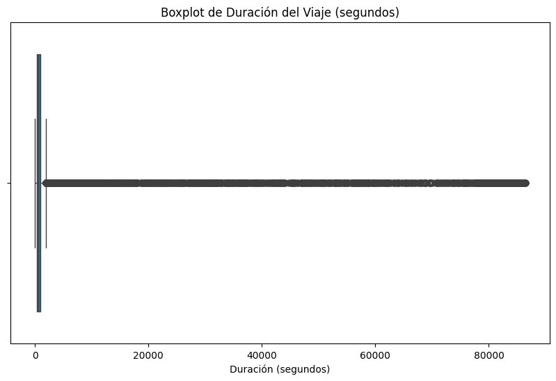
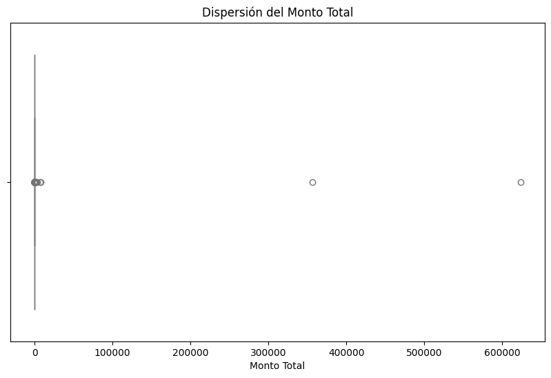
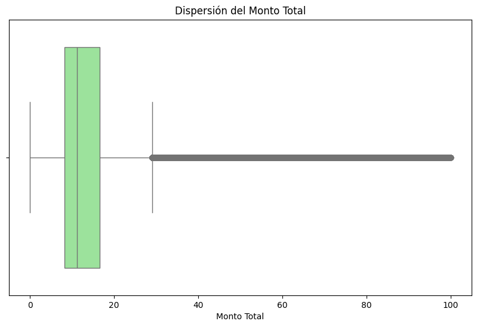
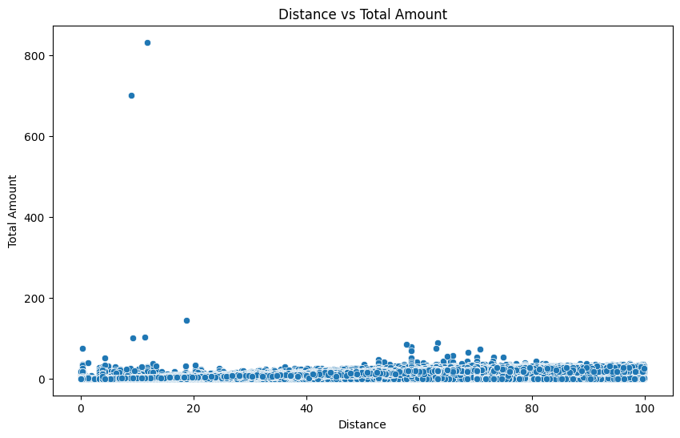
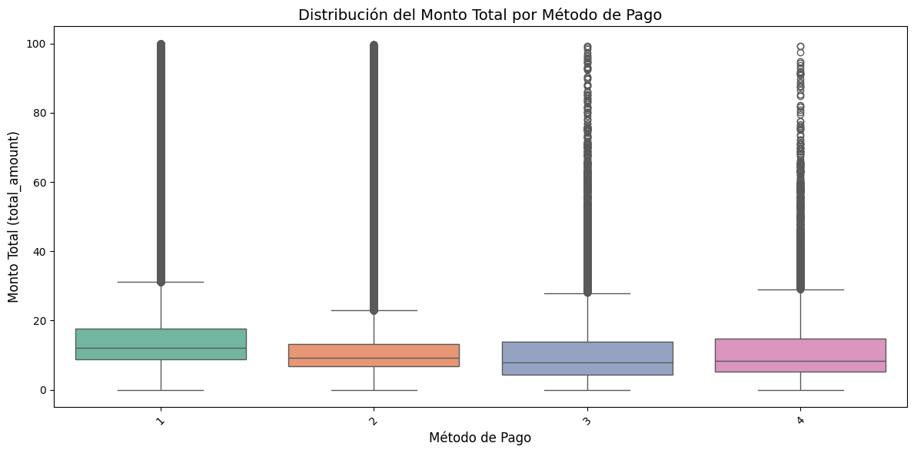
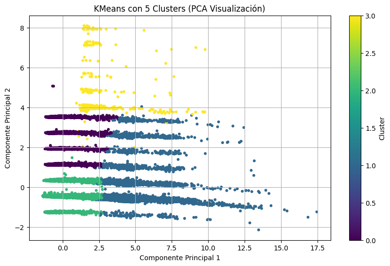
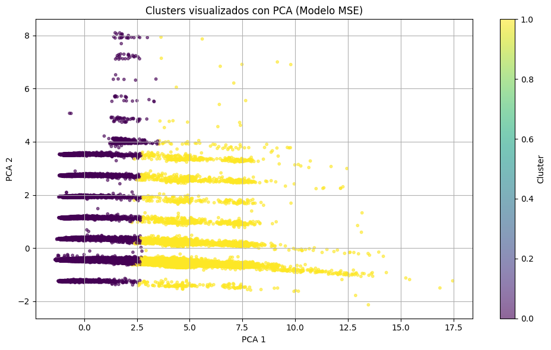
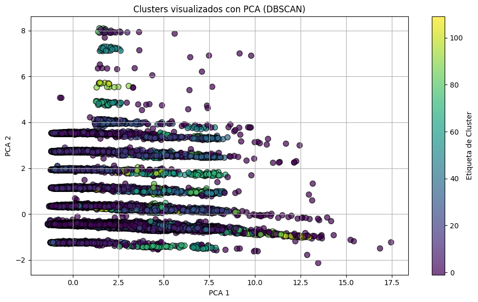
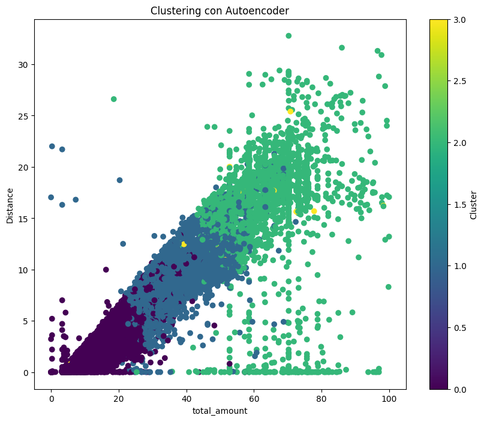
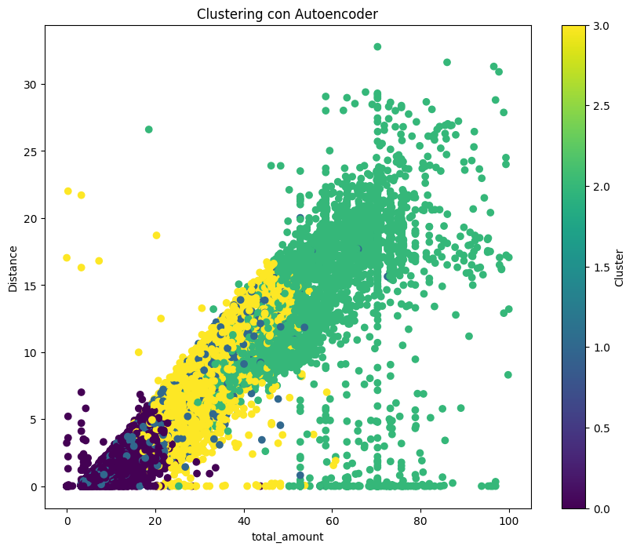

NYC Data#
Importación de las librerías
import warnings
warnings.filterwarnings("ignore")
import pandas as pd
import matplotlib.pyplot as plt
import seaborn as sns
import plotly.express as px
import numpy as np
import geopandas as gpd
import folium
Lectura de datos#
Note
para la lectura de los datos en formato .parquet se instala una extensión de la libreria pandas, tal como se muestra a continuación*pip install pandas fastparquet*
df_taxi = pd.read_parquet(r'C:\Users\PC\Desktop\ML_clase\jbook_ml20251\data\yellow_tripdata_2019-01.parquet')
df_taxi.shape
(7696617, 19)
df_taxi.head(10)
| VendorID | tpep_pickup_datetime | tpep_dropoff_datetime | passenger_count | trip_distance | RatecodeID | store_and_fwd_flag | PULocationID | DOLocationID | payment_type | fare_amount | extra | mta_tax | tip_amount | tolls_amount | improvement_surcharge | total_amount | congestion_surcharge | airport_fee | |
|---|---|---|---|---|---|---|---|---|---|---|---|---|---|---|---|---|---|---|---|
| 0 | 1 | 2019-01-01 00:46:40 | 2019-01-01 00:53:20 | 1.0 | 1.5 | 1.0 | N | 151 | 239 | 1 | 7.0 | 0.5 | 0.5 | 1.65 | 0.00 | 0.3 | 9.95 | NaN | NaN |
| 1 | 1 | 2019-01-01 00:59:47 | 2019-01-01 01:18:59 | 1.0 | 2.6 | 1.0 | N | 239 | 246 | 1 | 14.0 | 0.5 | 0.5 | 1.00 | 0.00 | 0.3 | 16.30 | NaN | NaN |
| 2 | 2 | 2018-12-21 13:48:30 | 2018-12-21 13:52:40 | 3.0 | 0.0 | 1.0 | N | 236 | 236 | 1 | 4.5 | 0.5 | 0.5 | 0.00 | 0.00 | 0.3 | 5.80 | NaN | NaN |
| 3 | 2 | 2018-11-28 15:52:25 | 2018-11-28 15:55:45 | 5.0 | 0.0 | 1.0 | N | 193 | 193 | 2 | 3.5 | 0.5 | 0.5 | 0.00 | 0.00 | 0.3 | 7.55 | NaN | NaN |
| 4 | 2 | 2018-11-28 15:56:57 | 2018-11-28 15:58:33 | 5.0 | 0.0 | 2.0 | N | 193 | 193 | 2 | 52.0 | 0.0 | 0.5 | 0.00 | 0.00 | 0.3 | 55.55 | NaN | NaN |
| 5 | 2 | 2018-11-28 16:25:49 | 2018-11-28 16:28:26 | 5.0 | 0.0 | 1.0 | N | 193 | 193 | 2 | 3.5 | 0.5 | 0.5 | 0.00 | 5.76 | 0.3 | 13.31 | NaN | NaN |
| 6 | 2 | 2018-11-28 16:29:37 | 2018-11-28 16:33:43 | 5.0 | 0.0 | 2.0 | N | 193 | 193 | 2 | 52.0 | 0.0 | 0.5 | 0.00 | 0.00 | 0.3 | 55.55 | NaN | NaN |
| 7 | 1 | 2019-01-01 00:21:28 | 2019-01-01 00:28:37 | 1.0 | 1.3 | 1.0 | N | 163 | 229 | 1 | 6.5 | 0.5 | 0.5 | 1.25 | 0.00 | 0.3 | 9.05 | NaN | NaN |
| 8 | 1 | 2019-01-01 00:32:01 | 2019-01-01 00:45:39 | 1.0 | 3.7 | 1.0 | N | 229 | 7 | 1 | 13.5 | 0.5 | 0.5 | 3.70 | 0.00 | 0.3 | 18.50 | NaN | NaN |
| 9 | 1 | 2019-01-01 00:57:32 | 2019-01-01 01:09:32 | 2.0 | 2.1 | 1.0 | N | 141 | 234 | 1 | 10.0 | 0.5 | 0.5 | 1.70 | 0.00 | 0.3 | 13.00 | NaN | NaN |
df_taxi.describe()
| VendorID | tpep_pickup_datetime | tpep_dropoff_datetime | passenger_count | trip_distance | RatecodeID | PULocationID | DOLocationID | payment_type | fare_amount | extra | mta_tax | tip_amount | tolls_amount | improvement_surcharge | total_amount | congestion_surcharge | airport_fee | |
|---|---|---|---|---|---|---|---|---|---|---|---|---|---|---|---|---|---|---|
| count | 7.696617e+06 | 7696617 | 7696617 | 7.667945e+06 | 7.696617e+06 | 7.667945e+06 | 7.696617e+06 | 7.696617e+06 | 7.696617e+06 | 7.696617e+06 | 7.696617e+06 | 7.696617e+06 | 7.696617e+06 | 7.696617e+06 | 7.696617e+06 | 7.696617e+06 | 2.811730e+06 | 0.0 |
| mean | 1.638174e+00 | 2019-01-17 00:56:26.319619072 | 2019-01-17 01:12:59.384516352 | 1.567032e+00 | 2.830146e+00 | 1.058371e+00 | 1.654005e+02 | 1.636289e+02 | 1.286947e+00 | 1.252968e+01 | 3.374054e-01 | 4.964963e-01 | 1.820830e+00 | 3.229543e-01 | 2.993410e-01 | 1.581065e+01 | 3.289790e-05 | NaN |
| min | 1.000000e+00 | 2001-02-02 14:55:07 | 2001-02-02 15:07:27 | 0.000000e+00 | 0.000000e+00 | 1.000000e+00 | 1.000000e+00 | 1.000000e+00 | 0.000000e+00 | -3.620000e+02 | -6.000000e+01 | -5.000000e-01 | -6.350000e+01 | -7.000000e+01 | -3.000000e-01 | -3.628000e+02 | 0.000000e+00 | NaN |
| 25% | 1.000000e+00 | 2019-01-09 17:39:43 | 2019-01-09 17:55:48 | 1.000000e+00 | 9.000000e-01 | 1.000000e+00 | 1.270000e+02 | 1.130000e+02 | 1.000000e+00 | 6.000000e+00 | 0.000000e+00 | 5.000000e-01 | 0.000000e+00 | 0.000000e+00 | 3.000000e-01 | 8.300000e+00 | 0.000000e+00 | NaN |
| 50% | 2.000000e+00 | 2019-01-16 22:15:35 | 2019-01-16 22:30:08 | 1.000000e+00 | 1.530000e+00 | 1.000000e+00 | 1.620000e+02 | 1.620000e+02 | 1.000000e+00 | 9.000000e+00 | 0.000000e+00 | 5.000000e-01 | 1.400000e+00 | 0.000000e+00 | 3.000000e-01 | 1.130000e+01 | 0.000000e+00 | NaN |
| 75% | 2.000000e+00 | 2019-01-24 19:12:20 | 2019-01-24 19:27:57 | 2.000000e+00 | 2.830000e+00 | 1.000000e+00 | 2.340000e+02 | 2.340000e+02 | 2.000000e+00 | 1.350000e+01 | 5.000000e-01 | 5.000000e-01 | 2.320000e+00 | 0.000000e+00 | 3.000000e-01 | 1.660000e+01 | 0.000000e+00 | NaN |
| max | 5.000000e+00 | 2088-01-24 00:25:39 | 2088-01-24 07:28:25 | 9.000000e+00 | 8.318000e+02 | 9.900000e+01 | 2.650000e+02 | 2.650000e+02 | 4.000000e+00 | 6.232599e+05 | 5.353800e+02 | 6.080000e+01 | 7.872500e+02 | 3.288000e+03 | 6.000000e-01 | 6.232617e+05 | 2.500000e+00 | NaN |
| std | 5.393984e-01 | NaN | NaN | 1.224420e+00 | 3.774548e+00 | 6.780839e-01 | 6.643992e+01 | 7.040929e+01 | 4.789416e-01 | 2.615897e+02 | 5.313564e-01 | 5.492382e-02 | 2.499463e+00 | 2.029812e+00 | 1.907704e-02 | 2.618117e+02 | 9.068830e-03 | NaN |
Para las variables tpep_pickup_datetime y tpep_dropoff_datetime se observa que el valor max corresponde a fecha del 2088, lo que puede ser un posible error de digitalización, por lo tanto se deben filtratr los viajes fuera del rango lógico (fuera de del año 2019)
Georreferenciación de las zonas de inicio y finalización de la carrera#
Note
se realiza un merge con un archivo externo para obtener las zonas de origen y destino
zonas_df = pd.read_csv(r"C:\Users\PC\Desktop\ML_clase\jbook_ml20251\data\taxi+_zone_lookup.csv")
# Unir el DataFrame de taxis con las zonas usando PULocationID
df_taxi = df_taxi.merge(zonas_df[['LocationID', 'Zone']], left_on='PULocationID', right_on='LocationID', how='left')
# Unir también el DOLocationID para obtener la zona de destino
df_taxi = df_taxi.merge(zonas_df[['LocationID', 'Zone']], left_on='DOLocationID', right_on='LocationID', how='left', suffixes=('_pickup', '_dropoff'))
# Revisar si hubo alguna falla en el mapeo (zonas no encontradas)
missing_zones = df_taxi[['Zone_pickup', 'Zone_dropoff']].isnull().sum()
print("Zonas no encontradas:\n", missing_zones)
Zonas no encontradas:
Zone_pickup 3890
Zone_dropoff 16904
dtype: int64
# Se eliminan estas zonas no encontradas para realizar el analisis geoespacial, dado que solo representan el 0.05% y 0.22% de los datos totaless:
print(f"Tamaño del dataset inicialmente: {df_taxi.shape}")
df_taxi = df_taxi.dropna(subset=['Zone_pickup', 'Zone_dropoff'])
print(f"Nuevo tamaño del dataset: {df_taxi.shape}")
missing_zones = df_taxi[['Zone_pickup', 'Zone_dropoff']].isnull().sum()
print("Zonas no encontradas:\n", missing_zones)
df_taxi.head(5)
Tamaño del dataset inicialmente: (7696617, 23)
Nuevo tamaño del dataset: (7678865, 23)
Zonas no encontradas:
Zone_pickup 0
Zone_dropoff 0
dtype: int64
| VendorID | tpep_pickup_datetime | tpep_dropoff_datetime | passenger_count | trip_distance | RatecodeID | store_and_fwd_flag | PULocationID | DOLocationID | payment_type | ... | tip_amount | tolls_amount | improvement_surcharge | total_amount | congestion_surcharge | airport_fee | LocationID_pickup | Zone_pickup | LocationID_dropoff | Zone_dropoff | |
|---|---|---|---|---|---|---|---|---|---|---|---|---|---|---|---|---|---|---|---|---|---|
| 0 | 1 | 2019-01-01 00:46:40 | 2019-01-01 00:53:20 | 1.0 | 1.5 | 1.0 | N | 151 | 239 | 1 | ... | 1.65 | 0.0 | 0.3 | 9.95 | NaN | NaN | 151 | Manhattan Valley | 239 | Upper West Side South |
| 1 | 1 | 2019-01-01 00:59:47 | 2019-01-01 01:18:59 | 1.0 | 2.6 | 1.0 | N | 239 | 246 | 1 | ... | 1.00 | 0.0 | 0.3 | 16.30 | NaN | NaN | 239 | Upper West Side South | 246 | West Chelsea/Hudson Yards |
| 2 | 2 | 2018-12-21 13:48:30 | 2018-12-21 13:52:40 | 3.0 | 0.0 | 1.0 | N | 236 | 236 | 1 | ... | 0.00 | 0.0 | 0.3 | 5.80 | NaN | NaN | 236 | Upper East Side North | 236 | Upper East Side North |
| 3 | 2 | 2018-11-28 15:52:25 | 2018-11-28 15:55:45 | 5.0 | 0.0 | 1.0 | N | 193 | 193 | 2 | ... | 0.00 | 0.0 | 0.3 | 7.55 | NaN | NaN | 193 | Queensbridge/Ravenswood | 193 | Queensbridge/Ravenswood |
| 4 | 2 | 2018-11-28 15:56:57 | 2018-11-28 15:58:33 | 5.0 | 0.0 | 2.0 | N | 193 | 193 | 2 | ... | 0.00 | 0.0 | 0.3 | 55.55 | NaN | NaN | 193 | Queensbridge/Ravenswood | 193 | Queensbridge/Ravenswood |
5 rows × 23 columns
Show code cell source
# Coordenadas de algunas zonas de recogida y entrega (ejemplo)
pickup_zones_coords = {
'Manhattan Valley': [40.8071, -73.9610],
'Upper West Side South': [40.7850, -73.9750],
'Upper East Side North': [40.7847, -73.9523],
'Queensbridge/Ravenswood': [40.7612, -73.9442],
'Midtown North': [40.7549, -73.9808],
'Sutton Place/Turtle Bay North': [40.7566, -73.9689],
'Lenox Hill West': [40.7661, -73.9630],
'West Chelsea/Hudson Yards': [40.7475, -74.0024],
'Stuy Town/Peter Cooper Village': [40.7311, -73.9790],
'Murray Hill': [40.7450, -73.9819],
'Gramercy': [40.7365, -73.9857],
'Central Harlem': [40.8115, -73.9465],
'Hamilton Heights': [40.8230, -73.9453],
'Greenwich Village North': [40.7375, -73.9987],
'Midtown Center': [40.7550, -73.9850],
'LaGuardia Airport': [40.7769, -73.8737],
'Little Italy/NoLiTa': [40.7223, -73.9963],
'TriBeCa/Civic Center': [40.7168, -74.0070],
'Upper East Side South': [40.7736, -73.9567],
'Yorkville West': [40.7741, -73.9503],
'JFK Airport': [40.6413, -73.7781],
'NV': [40.7038, -74.0148],
'Lincoln Square East': [40.7713, -73.9863],
'West Village': [40.7336, -74.0033],
'Kips Bay': [40.7422, -73.9763],
'Flatiron': [40.7411, -73.9897],
'Midtown East': [40.7551, -73.9760],
'Lenox Hill East': [40.7673, -73.9579],
'East Chelsea': [40.7450, -73.9989],
'Financial District South': [40.7057, -74.0125],
'East Harlem North': [40.7954, -73.9384],
'East Village': [40.7250, -73.9816],
'East Harlem South': [40.7982, -73.9405],
'UN/Turtle Bay South': [40.7484, -73.9680],
'Lower East Side': [40.7158, -73.9848],
'Clinton East': [40.7590, -73.9900],
'Lincoln Square West': [40.7702, -73.9873],
'Alphabet City': [40.7261, -73.9819],
'Midtown South': [40.7440, -73.9930],
'Two Bridges/Seward Park': [40.7110, -73.9865],
'Chinatown': [40.7150, -73.9985],
'Central Park': [40.7851, -73.9683],
'Penn Station/Madison Sq West': [40.7500, -73.9933],
'Meatpacking/West Village West': [40.7400, -74.0065],
'Clinton West': [40.7485, -73.9962],
'Greenwich Village South': [40.7323, -73.9988],
'Central Harlem North': [40.8105, -73.9440],
'Bay Ridge': [40.6300, -74.0280],
'Bath Beach': [40.6075, -73.9887],
'Park Slope': [40.6625, -73.9895],
'SoHo': [40.7244, -73.9973],
'Battery Park City': [40.7130, -74.0160],
'World Trade Center': [40.7115, -74.0134],
'Fort Greene': [40.6928, -73.9745],
'Union Sq': [40.7359, -73.9911],
'Hudson Sq': [40.7275, -74.0063],
'Long Island City/Hunters Point': [40.7451, -73.9524],
'Yorkville East': [40.7729, -73.9511],
'Sunnyside': [40.7461, -73.9245],
'Bloomingdale': [40.7620, -73.9886],
'Morningside Heights': [40.8100, -73.9640],
'East Williamsburg': [40.7106, -73.9499],
'Prospect Heights': [40.6740, -73.9640],
'Brooklyn Heights': [40.6960, -73.9970],
'Garment District': [40.7550, -73.9940],
'Hunts Point': [40.8270, -73.8798],
'Melrose South': [40.8190, -73.9190],
'Washington Heights South': [40.8450, -73.9400],
'Washington Heights North': [40.8630, -73.9310],
'Seaport': [40.7090, -74.0036],
'Financial District North': [40.7080, -74.0100],
'Boerum Hill': [40.6834, -73.9912],
'Woodside': [40.7459, -73.8881],
'Steinway': [40.7651, -73.9065],
'Rego Park': [40.7255, -73.8576],
'Manhattanville': [40.8250, -73.9575],
'Times Sq/Theatre District': [40.7580, -73.9855],
'Astoria': [40.7644, -73.9249],
'DUMBO/Vinegar Hill': [40.7033, -73.9870],
'Sunset Park West': [40.6402, -74.0103],
'University Heights/Morris Heights': [40.8670, -73.9204],
'Kew Gardens': [40.7197, -73.8449],
'Downtown Brooklyn/MetroTech': [40.6928, -73.9866],
'Jackson Heights': [40.7511, -73.8830],
'Elmhurst': [40.7411, -73.8805],
'Red Hook': [40.6754, -74.0143],
'Williamsburg (North Side)': [40.7162, -73.9546],
'Old Astoria': [40.7712, -73.9221],
'Mount Hope': [40.8616, -73.8942],
'Flatbush/Ditmas Park': [40.6367, -73.9625],
'Bushwick South': [40.6770, -73.9210],
'Bedford': [40.7113, -73.9551],
'Stuyvesant Heights': [40.6754, -73.9200],
'Battery Park': [40.7072, -74.0134],
'Cobble Hill': [40.6857, -73.9982],
'Greenpoint': [40.7400, -73.9510],
'Williamsburg (South Side)': [40.7086, -73.9571],
'Crown Heights North': [40.6710, -73.9440],
'Windsor Terrace': [40.6602, -73.9760],
'South Jamaica': [40.6699, -73.8046],
'East Elmhurst': [40.7615, -73.8784],
'South Williamsburg': [40.7102, -73.9617],
'Ocean Hill': [40.6761, -73.9189],
'Clinton Hill': [40.6851, -73.9586],
'Mott Haven/Port Morris': [40.8084, -73.9143],
'East New York': [40.6699, -73.8710],
'Kensington': [40.6432, -73.9774],
'Ridgewood': [40.7012, -73.9073],
'Carroll Gardens': [40.6844, -73.9960],
'West Concourse': [40.8235, -73.9045],
'Williamsbridge/Olinville': [40.8794, -73.8681],
'South Ozone Park': [40.6752, -73.8261],
'East New York/Pennsylvania Avenue': [40.6747, -73.8877],
'Westchester Village/Unionport': [40.8401, -73.8694],
'Highbridge': [40.8470, -73.9240],
'Gowanus': [40.6750, -73.9890],
'Schuylerville/Edgewater Park': [40.8580, -73.8267],
'Crotona Park East': [40.8499, -73.9072],
'Long Island City/Queens Plaza': [40.7445, -73.9482],
'Queens Village': [40.7280, -73.7705],
'Columbia Street': [40.6785, -73.9942],
'Saint Albans': [40.6950, -73.7734],
'Bushwick North': [40.7039, -73.9227],
'Marble Hill': [40.8692, -73.9195],
'Brooklyn Navy Yard': [40.7241, -73.9755],
'East Tremont': [40.8614, -73.8670],
'Jamaica': [40.6695, -73.7950],
'Van Cortlandt Village': [40.8766, -73.9025],
'East Concourse/Concourse Village': [40.8382, -73.9266],
'Howard Beach': [40.6565, -73.8477],
'Prospect Park': [40.6602, -73.9689],
'Rosedale': [40.6715, -73.7628],
'Bellerose': [40.7363, -73.7498],
'Soundview/Castle Hill': [40.8287, -73.8580],
'Baisley Park': [40.6744, -73.8192],
'Springfield Gardens North': [40.6665, -73.7708],
'Norwood': [40.8760, -73.8902],
'West Farms/Bronx River': [40.8374, -73.8591],
'Starrett City': [40.6446, -73.8583],
'Maspeth': [40.7297, -73.9022],
'Middle Village': [40.7343, -73.8880],
'Prospect-Lefferts Gardens': [40.6550, -73.9608],
'Flushing Meadows-Corona Park': [40.7491, -73.8447],
'Homecrest': [40.6023, -73.9667],
'Corona': [40.7423, -73.8608],
'Richmond Hill': [40.6958, -73.8318]
}
dropoff_zones_coords = {
'Upper West Side South': [40.7762, -73.9822],
'West Chelsea/Hudson Yards': [40.7475, -74.0024],
'Upper East Side North': [40.7736, -73.9566],
'Queensbridge/Ravenswood': [40.7590, -73.9442],
'Sutton Place/Turtle Bay North': [40.7498, -73.9678],
'Astoria': [40.7690, -73.9442],
'Union Sq': [40.7359, -73.9911],
'Midtown East': [40.7486, -73.9739],
'Manhattan Valley': [40.7900, -73.9549],
'Boerum Hill': [40.6830, -73.9896],
'Murray Hill': [40.7411, -73.9887],
'Gramercy': [40.7369, -73.9876],
'Lenox Hill West': [40.7750, -73.9580],
'West Concourse': [40.6840, -73.9950],
'Central Harlem North': [40.8120, -73.9450],
'Flatiron': [40.7411, -73.9897],
'Clinton West': [40.7410, -74.0027],
'World Trade Center': [40.7115, -74.0134],
'East Village': [40.7272, -73.9810],
'Park Slope': [40.6629, -73.9896],
'NV': [40.7580, -73.9855],
'Lincoln Square East': [40.7736, -73.9832],
'Upper West Side North': [40.7790, -73.9810],
'Elmhurst/Maspeth': [40.7400, -73.8830],
'Yorkville West': [40.7790, -73.9520],
'Lenox Hill East': [40.7760, -73.9570],
'Midtown Center': [40.7480, -73.9845],
'Kips Bay': [40.7420, -73.9760],
'Washington Heights North': [40.8610, -73.9330],
'East Harlem South': [40.7910, -73.9440],
'Central Harlem': [40.8116, -73.9465],
'Financial District South': [40.7074, -74.0113],
'Mott Haven/Port Morris': [40.8170, -73.9220],
'Greenwich Village North': [40.7336, -74.0027],
'East Chelsea': [40.7440, -74.0010],
'Stuy Town/Peter Cooper Village': [40.7360, -73.9810],
'Greenpoint': [40.7300, -73.9570],
'Clinton East': [40.7420, -73.9920],
'UN/Turtle Bay South': [40.7480, -73.9670],
'West Village': [40.7350, -74.0070],
'Battery Park City': [40.7030, -74.0170],
'Alphabet City': [40.7230, -73.9830],
'Yorkville East': [40.7790, -73.9520],
'Lower East Side': [40.7180, -73.9840],
'Two Bridges/Seward Park': [40.7130, -73.9870],
'Fort Greene': [40.6820, -73.9570],
'Williamsburg (South Side)': [40.7080, -73.9570],
'Penn Station/Madison Sq West': [40.7500, -73.9930],
'Lincoln Square West': [40.7736, -73.9832],
'Long Island City/Hunters Point': [40.7440, -73.9480],
'Central Park': [40.7850, -73.9680],
'Financial District North': [40.7050, -74.0080],
'Ridgewood': [40.7120, -73.9140],
'Fresh Meadows': [40.7320, -73.8100],
'Sunset Park West': [40.6450, -74.0160],
'Bensonhurst West': [40.6020, -73.9970],
'Upper East Side South': [40.7740, -73.9520],
'Steinway': [40.7580, -73.8830],
'TriBeCa/Civic Center': [40.7180, -74.0080],
'Midtown South': [40.7400, -73.9900],
'Meatpacking/West Village West': [40.7400, -74.0050],
'Washington Heights South': [40.8500, -73.9400],
'Williamsburg (North Side)': [40.7100, -73.9500],
'Brownsville': [40.6500, -73.9150],
'Windsor Terrace': [40.6600, -73.9760],
'Bushwick South': [40.6780, -73.9230],
'Elmhurst': [40.7400, -73.8830],
'Long Island City/Queens Plaza': [40.7440, -73.9480]
}
m = folium.Map(location=[40.7128, -74.0060], zoom_start=12)
def add_zone_to_map(zones_coords, color):
for zone, coords in zones_coords.items():
folium.CircleMarker(
location=coords,
radius=5, # Tamaño del círculo
color=color, # Color del borde del círculo
fill=True, # Llenar el círculo
fill_color=color, # Color de relleno
fill_opacity=0.6 # Opacidad del relleno
).add_to(m)
add_zone_to_map(pickup_zones_coords, 'blue')
add_zone_to_map(dropoff_zones_coords, 'red')
m
Zonas mas recurrentes#
El análisis de las 10 zonas con mayor frecuencia de recogida y destino revela patrones interesantes sobre los puntos más activos de la ciudad en términos de transporte de taxis. Las zonas más frecuentes para la recogida de pasajeros incluyen áreas de alto tráfico y centros urbanos clave, como el Upper East Side South, Upper East Side North, y el Midtown Center, que lideran con un número significativo de viajes. En cuanto a los destinos, la Upper East Side North ocupa el primer lugar, seguida de cerca por Upper East Side South y Midtown Center.
Es notable que varias de las mismas zonas que aparecen como las más frecuentadas para la recogida también están entre las más comunes como destinos, lo que sugiere una alta rotación de pasajeros en estas áreas. Sin embargo, también se observan algunas diferencias, como el hecho de que la zona de Murray Hill aparece en el Top 10 de destinos, pero no en el de recogida, lo que podría indicar que es un lugar donde los pasajeros tienden a viajar con frecuencia desde otras zonas. En general, las áreas cercanas a importantes centros comerciales, de negocios y turísticos como Times Square, Penn Station y el Theatre District muestran una gran actividad, lo que refleja el patrón de movilidad típico en ciudades grandes con una alta densidad de población y atracciones principales.
top_pickup_zones = df_taxi['Zone_pickup'].value_counts().head(10)
top_dropoff_zones = df_taxi['Zone_dropoff'].value_counts().head(10)
print("Top 10 Zonas de Recogida:")
print(top_pickup_zones)
print("\nTop 10 Zonas de Destino:")
print(top_dropoff_zones)
Top 10 Zonas de Recogida:
Zone_pickup
Upper East Side South 332712
Upper East Side North 323250
Midtown Center 312560
Midtown East 277291
Times Sq/Theatre District 263780
Penn Station/Madison Sq West 260718
Clinton East 240943
Murray Hill 239393
Union Sq 237803
Lincoln Square East 235474
Name: count, dtype: int64
Top 10 Zonas de Destino:
Zone_dropoff
Upper East Side North 334449
Upper East Side South 296332
Midtown Center 294019
Murray Hill 242422
Midtown East 232645
Times Sq/Theatre District 225540
Lincoln Square East 214354
Clinton East 208895
Union Sq 204529
Upper West Side South 204442
Name: count, dtype: int64
Preprocesamiento#
def process_taxi_data(df_taxi):
taxi = df_taxi[['tpep_pickup_datetime', 'tpep_dropoff_datetime', 'PULocationID',
'DOLocationID','passenger_count', 'RatecodeID','trip_distance','fare_amount','total_amount', 'payment_type',
'tolls_amount', 'Zone_pickup', 'Zone_dropoff']].copy()
print(f"Tamaño del dataset inicialmente: {df_taxi.shape}")
# Renaming Columns
new_names = {'tpep_pickup_datetime': 'PickUpDate', 'tpep_dropoff_datetime':'DropOffDate',
'passenger_count': 'Passengers', 'trip_distance':'Distance'}
taxi = taxi.rename(columns=new_names)
# Correct Format in Date Columns
taxi['PickUpDate'] = pd.to_datetime(taxi['PickUpDate'], format='%Y-%m-%d %H:%M:%S')
taxi['DropOffDate'] = pd.to_datetime(taxi['DropOffDate'], format='%Y-%m-%d %H:%M:%S')
# Create Columns for Date Analysis
taxi['PickUpYear'] = taxi['PickUpDate'].dt.year
taxi['PickUpMonth'] = taxi['PickUpDate'].dt.month
taxi['PickUpWeek'] = taxi['PickUpDate'].dt.isocalendar().week
taxi['PickUpDay'] = taxi['PickUpDate'].dt.day
taxi['PickUpHour'] = taxi['PickUpDate'].dt.hour
taxi['PickUpDayWeek'] = taxi['PickUpDate'].dt.dayofweek + 1
# Duration Column
taxi['Duration'] = taxi['DropOffDate'] - taxi['PickUpDate']
# Total Amount Column
taxi['total_amount'] = taxi['total_amount'].abs()
taxi['tolls_amount'] = taxi['tolls_amount'].abs()
taxi['fare_amount'] = taxi['fare_amount'].abs()
# Drop Date Columns
taxi = taxi.drop(labels=['PickUpDate', 'DropOffDate'], axis=1)
return taxi
taxi_df = process_taxi_data(df_taxi)
taxi_df = taxi_df[['PULocationID', 'DOLocationID', 'Passengers', 'Distance', 'RatecodeID','fare_amount', 'total_amount', 'PickUpYear', 'PickUpMonth', 'PickUpWeek', 'PickUpDay', 'PickUpHour', 'PickUpDayWeek','payment_type', 'tolls_amount', 'Duration', 'Zone_pickup', 'Zone_dropoff']]
print(f"Tamaño del dataset taxi_df: {taxi_df.shape}")
taxi_df.head(10)
Tamaño del dataset inicialmente: (7678865, 23)
Tamaño del dataset taxi_df: (7678865, 18)
| PULocationID | DOLocationID | Passengers | Distance | RatecodeID | fare_amount | total_amount | PickUpYear | PickUpMonth | PickUpWeek | PickUpDay | PickUpHour | PickUpDayWeek | payment_type | tolls_amount | Duration | Zone_pickup | Zone_dropoff | |
|---|---|---|---|---|---|---|---|---|---|---|---|---|---|---|---|---|---|---|
| 0 | 151 | 239 | 1.0 | 1.5 | 1.0 | 7.0 | 9.95 | 2019 | 1 | 1 | 1 | 0 | 2 | 1 | 0.00 | 0 days 00:06:40 | Manhattan Valley | Upper West Side South |
| 1 | 239 | 246 | 1.0 | 2.6 | 1.0 | 14.0 | 16.30 | 2019 | 1 | 1 | 1 | 0 | 2 | 1 | 0.00 | 0 days 00:19:12 | Upper West Side South | West Chelsea/Hudson Yards |
| 2 | 236 | 236 | 3.0 | 0.0 | 1.0 | 4.5 | 5.80 | 2018 | 12 | 51 | 21 | 13 | 5 | 1 | 0.00 | 0 days 00:04:10 | Upper East Side North | Upper East Side North |
| 3 | 193 | 193 | 5.0 | 0.0 | 1.0 | 3.5 | 7.55 | 2018 | 11 | 48 | 28 | 15 | 3 | 2 | 0.00 | 0 days 00:03:20 | Queensbridge/Ravenswood | Queensbridge/Ravenswood |
| 4 | 193 | 193 | 5.0 | 0.0 | 2.0 | 52.0 | 55.55 | 2018 | 11 | 48 | 28 | 15 | 3 | 2 | 0.00 | 0 days 00:01:36 | Queensbridge/Ravenswood | Queensbridge/Ravenswood |
| 5 | 193 | 193 | 5.0 | 0.0 | 1.0 | 3.5 | 13.31 | 2018 | 11 | 48 | 28 | 16 | 3 | 2 | 5.76 | 0 days 00:02:37 | Queensbridge/Ravenswood | Queensbridge/Ravenswood |
| 6 | 193 | 193 | 5.0 | 0.0 | 2.0 | 52.0 | 55.55 | 2018 | 11 | 48 | 28 | 16 | 3 | 2 | 0.00 | 0 days 00:04:06 | Queensbridge/Ravenswood | Queensbridge/Ravenswood |
| 7 | 163 | 229 | 1.0 | 1.3 | 1.0 | 6.5 | 9.05 | 2019 | 1 | 1 | 1 | 0 | 2 | 1 | 0.00 | 0 days 00:07:09 | Midtown North | Sutton Place/Turtle Bay North |
| 8 | 229 | 7 | 1.0 | 3.7 | 1.0 | 13.5 | 18.50 | 2019 | 1 | 1 | 1 | 0 | 2 | 1 | 0.00 | 0 days 00:13:38 | Sutton Place/Turtle Bay North | Astoria |
| 9 | 141 | 234 | 2.0 | 2.1 | 1.0 | 10.0 | 13.00 | 2019 | 1 | 1 | 1 | 0 | 2 | 1 | 0.00 | 0 days 00:12:00 | Lenox Hill West | Union Sq |
# Filtrar los registros cuyo año de recogida sea exactamente 2019
taxi_df = taxi_df[taxi_df['PickUpYear'] == 2019]
print(taxi_df['PickUpYear'].describe())
count 7678425.0
mean 2019.0
std 0.0
min 2019.0
25% 2019.0
50% 2019.0
75% 2019.0
max 2019.0
Name: PickUpYear, dtype: float64
taxi_df['RatecodeID'].describe()
count 7.649851e+06
mean 1.052597e+00
std 6.486683e-01
min 1.000000e+00
25% 1.000000e+00
50% 1.000000e+00
75% 1.000000e+00
max 9.900000e+01
Name: RatecodeID, dtype: float64
# Filtrar registros donde RatecodeID esté entre 1 y 6 (inclusive)
taxi_df = taxi_df[(taxi_df['RatecodeID'] >= 1) & (taxi_df['RatecodeID'] <= 6)]
# Verificar después del filtrado
print(taxi_df['RatecodeID'].describe())
print("\nValores únicos:", sorted(taxi_df['RatecodeID'].unique()))
# Convertir a categoría
taxi_df['RatecodeID'] = taxi_df['RatecodeID'].astype('category')
print(taxi_df['RatecodeID'].dtypes)
count 7.649615e+06
mean 1.049575e+00
std 3.532665e-01
min 1.000000e+00
25% 1.000000e+00
50% 1.000000e+00
75% 1.000000e+00
max 6.000000e+00
Name: RatecodeID, dtype: float64
Valores únicos: [1.0, 2.0, 3.0, 4.0, 5.0, 6.0]
category
print(taxi_df['payment_type'].dtypes)
print("\nValores únicos:", sorted(taxi_df['payment_type'].unique()))
# Convertir a categoría
taxi_df['payment_type'] = taxi_df['payment_type'].astype('category')
print(taxi_df['payment_type'].dtypes)
int64
Valores únicos: [1, 2, 3, 4]
category
taxi_df['Duration'].describe()
count 7649615
mean 0 days 00:16:25.511351486
std 0 days 01:21:37.159609657
min -59 days +11:19:30
25% 0 days 00:06:05
50% 0 days 00:10:09
75% 0 days 00:16:31
max 30 days 07:28:01
Name: Duration, dtype: object
taxi_df = taxi_df[(taxi_df['Duration'] >= pd.Timedelta(0)) & (taxi_df['Duration'] <= pd.Timedelta(days=1))]
taxi_df['Duration'].describe()
count 7649608
mean 0 days 00:16:25.545295262
std 0 days 01:11:25.558839737
min 0 days 00:00:00
25% 0 days 00:06:05
50% 0 days 00:10:09
75% 0 days 00:16:31
max 0 days 23:59:59
Name: Duration, dtype: object
# Convertir la columna 'Duration' a números (segundos) para poder hacer un boxplot
taxi_df['Duration_seconds'] = taxi_df['Duration'].dt.total_seconds()
# Ahora puedes hacer un boxplot de 'Duration_seconds'
plt.figure(figsize=(10, 6))
sns.boxplot(x=taxi_df['Duration_seconds'])
plt.title('Boxplot de Duración del Viaje (segundos)')
plt.xlabel('Duración (segundos)')
plt.show()

taxi_df['Duration_minutes'] = taxi_df['Duration'].dt.total_seconds() / 60
# Crear rangos de minutos
bins = [0, 11, 21, 31, 41, 51, 61, 71, 81, 91, 101, float('inf')]
labels = ['0-11', '11-21', '21-31', '31-41', '41-51', '51-61', '61-71', '71-81', '81-91', '91-101', '101+']
# Agrupar por rangos de minutos y contar las carreras
taxi_df['Duration_range'] = pd.cut(taxi_df['Duration_minutes'], bins=bins, labels=labels, include_lowest=True)
race_count_by_range = taxi_df.groupby('Duration_range')['Duration'].count()
race_count_by_range
Duration_range
0-11 4166743
11-21 2296039
21-31 744956
31-41 257810
41-51 98303
51-61 39536
61-71 15991
71-81 5992
81-91 2032
91-101 719
101+ 21487
Name: Duration, dtype: int64
patrones de duración de las carreras#
# Crear el gráfico de barras
plt.figure(figsize=(12, 6)) # Ajustar el tamaño del gráfico
plt.bar(race_count_by_range.index, race_count_by_range.values)
# Etiquetas y título del gráfico
plt.xlabel('Rango de Duración (minutos)')
plt.ylabel('Número de Carreras')
plt.title('Distribución de la Duración de las Carreras de Taxi')
# Rotar las etiquetas del eje x para una mejor legibilidad (opcional)
plt.xticks(rotation=45, ha='right')
# Mostrar el gráfico
plt.tight_layout()
plt.show()
Inspección de datos faltantes y nulos#
# Check for NaN values in the DataFrame
nan_counts = taxi_df.isna().sum()
# Print the counts of NaN values for each column
print(nan_counts)
# Optionally, you can also check if there are any NaN values in the entire DataFrame
has_nan = taxi_df.isnull().values.any()
print(f"\nDoes the DataFrame contain NaN values? {has_nan}")
PULocationID 0
DOLocationID 0
Passengers 0
Distance 0
RatecodeID 0
fare_amount 0
total_amount 0
PickUpYear 0
PickUpMonth 0
PickUpWeek 0
PickUpDay 0
PickUpHour 0
PickUpDayWeek 0
payment_type 0
tolls_amount 0
Duration 0
Zone_pickup 0
Zone_dropoff 0
Duration_seconds 0
Duration_minutes 0
Duration_range 0
dtype: int64
Does the DataFrame contain NaN values? False
duplicate_rows = taxi_df[taxi_df.duplicated()]
num_duplicates = len(duplicate_rows)
print(f"Número de filas duplicadas: {num_duplicates}")
Número de filas duplicadas: 1270
# Eliminar filas con valores NaN
taxi_df = taxi_df.dropna()
# Eliminar filas duplicadas
taxi_df = taxi_df.drop_duplicates()
# Verificar si se eliminaron los valores NaN y las filas duplicadas
nan_counts = taxi_df.isna().sum()
print(nan_counts)
duplicate_rows = taxi_df[taxi_df.duplicated()]
num_duplicates = len(duplicate_rows)
print(f"Número de filas duplicadas: {num_duplicates}")
PULocationID 0
DOLocationID 0
Passengers 0
Distance 0
RatecodeID 0
fare_amount 0
total_amount 0
PickUpYear 0
PickUpMonth 0
PickUpWeek 0
PickUpDay 0
PickUpHour 0
PickUpDayWeek 0
payment_type 0
tolls_amount 0
Duration 0
Zone_pickup 0
Zone_dropoff 0
Duration_seconds 0
Duration_minutes 0
Duration_range 0
dtype: int64
Número de filas duplicadas: 0
EDA
taxi_df['total_amount'].describe()
count 7.648338e+06
mean 1.549407e+01
std 2.599288e+02
min 0.000000e+00
25% 8.190000e+00
50% 1.116000e+01
75% 1.656000e+01
max 6.232617e+05
Name: total_amount, dtype: float64
# Crear un boxplot para la distribución de 'total_amount'
plt.figure(figsize=(10, 6))
sns.boxplot(x=taxi_df['total_amount'], color='lightgreen')
plt.title('Dispersión del Monto Total')
plt.xlabel('Monto Total')
plt.show()

#Filtramos total_amount menores a 100
taxi_df = taxi_df[taxi_df['total_amount'] < 100]
print(taxi_df['total_amount'].describe())
count 7.642776e+06
mean 1.528406e+01
std 1.264956e+01
min 0.000000e+00
25% 8.190000e+00
50% 1.116000e+01
75% 1.656000e+01
max 9.998000e+01
Name: total_amount, dtype: float64
# Definir los intervalos y etiquetas (ajustado para que lleguen hasta 100)
bins = [0, 10, 20, 30, 50, 100] # Rango de montos hasta 100
labels = ['0-10', '10-20', '20-30', '30-50', '50-100']
# Crear una nueva columna 'Amount_range' con los rangos en el DataFrame filtrado
taxi_df['Amount_range'] = pd.cut(taxi_df['total_amount'], bins=bins, labels=labels, right=False)
# Crear la tabla de frecuencias agrupadas
frequency_table_filtered = taxi_df['Amount_range'].value_counts().sort_index()
# Calcular la proporción dividiendo cada frecuencia por el total de registros
frequency_table_filtered_proportion = frequency_table_filtered / frequency_table_filtered.sum()
# Crear un DataFrame con ambas columnas: frecuencia y proporción
result_df = pd.DataFrame({
'Frequency': frequency_table_filtered,
'Proportion': frequency_table_filtered_proportion
})
# Mostrar la tabla de frecuencias con las proporciones
print(result_df)
Frequency Proportion
Amount_range
0-10 3168311 0.414550
10-20 3136788 0.410425
20-30 649655 0.085002
30-50 400416 0.052391
50-100 287606 0.037631
# Crear un boxplot para la distribución de 'total_amount'
plt.figure(figsize=(10, 6))
sns.boxplot(x=taxi_df['total_amount'], color='lightgreen')
plt.title('Dispersión del Monto Total')
plt.xlabel('Monto Total')
plt.show()

plt.figure(figsize=(10, 6))
sns.scatterplot(x='total_amount', y='Distance', data=taxi_df)
plt.title('Distance vs Total Amount')
plt.xlabel('Distance')
plt.ylabel('Total Amount')
plt.show()

Tipos de pagos#
# Contar las ocurrencias de cada tipo de pago
payment_type_counts = taxi_df['payment_type'].value_counts()
# Diccionario de traducción de los tipos de pago a español
payment_type_labels_es = {
1: 'Tarjeta de crédito',
2: 'Efectivo',
3: 'Sin cargo',
4: 'Disputa',
5: 'Desconocido',
6: 'Viaje anulado'
}
# Asignar los nombres en español a los códigos y mostrar los resultados
payment_type_counts_named_es = payment_type_counts.rename(payment_type_labels_es)
print(payment_type_counts_named_es)
payment_type
Tarjeta de crédito 5468832
Efectivo 2130268
Sin cargo 32679
Disputa 10997
Name: count, dtype: int64
# Crear un gráfico de barras
plt.figure(figsize=(10, 6))
payment_type_counts_named_es.plot(kind='bar', color='skyblue')
# Añadir título y etiquetas
plt.title('Frecuencia de Tipos de Pago', fontsize=14)
plt.xlabel('Tipo de Pago', fontsize=12)
plt.ylabel('Cantidad de Registros', fontsize=12)
# Mostrar las etiquetas en el eje x de forma legible
plt.xticks(rotation=45, ha='right')
# Mostrar el gráfico
plt.tight_layout()
plt.show()
plt.figure(figsize=(12, 6))
sns.boxplot(x='payment_type', y='total_amount', data=taxi_df, palette='Set2')
# Añadir título y etiquetas
plt.title('Distribución del Monto Total por Método de Pago', fontsize=14)
plt.xlabel('Método de Pago', fontsize=12)
plt.ylabel('Monto Total (total_amount)', fontsize=12)
# Rotar las etiquetas del eje x para que sean legibles
plt.xticks(rotation=45)
plt.tight_layout()
# Mostrar el gráfico
plt.show()

# Seleccionar solo las columnas numéricas para la correlación
numeric_columns = ['total_amount', 'Distance', 'Passengers', 'fare_amount', 'tolls_amount', 'Duration']
# Calcular la matriz de correlación
correlation_matrix = taxi_df[numeric_columns].corr()
plt.figure(figsize=(10, 6))
sns.heatmap(correlation_matrix, annot=True, cmap='coolwarm', fmt='.2f', linewidths=0.5, cbar_kws={'label': 'Correlación'})
plt.title('Mapa de Calor de la Correlación entre Variables', fontsize=14)
plt.tight_layout()
plt.show()
Modelos No Supervisados#
En el análisis del conjunto de datos de taxis de NYC, se exploran modelos no supervisados como K-means, DBSCAN y autoencoders para descubrir patrones inherentes y segmentar a los clientes sin depender de etiquetas predefinidas. K-means agrupa los viajes en clústeres basados en la proximidad de sus características, DBSCAN identifica clústeres densos y marca valores atípicos, y los autoencoders aprenden representaciones comprimidas de los datos para revelar estructuras subyacentes. Estas técnicas permiten identificar segmentos de clientes con comportamientos similares, optimizar servicios y mejorar la segmentación de marketing.
Kmeans#
Este código implementa el algoritmo de clustering K-means para segmentar datos de viajes de taxi, buscando patrones inherentes sin etiquetas predefinidas. Primero, selecciona columnas numéricas relevantes y las estandariza para asegurar que todas contribuyan equitativamente al cálculo de distancias. Luego, aplica el “método del codo” para determinar el número óptimo de clústeres, graficando la inercia (suma de distancias cuadradas) para diferentes valores de ‘k’. Finalmente, entrena K-means con el número óptimo de clústeres encontrado y asigna cada viaje a un clúster, añadiendo esta información al DataFrame original para su posterior análisis y visualización.
# seleccion de variabls
print(taxi_df.columns)
Index(['PULocationID', 'DOLocationID', 'Passengers', 'Distance', 'RatecodeID',
'fare_amount', 'total_amount', 'PickUpYear', 'PickUpMonth',
'PickUpWeek', 'PickUpDay', 'PickUpHour', 'PickUpDayWeek',
'payment_type', 'tolls_amount', 'Duration', 'Zone_pickup',
'Zone_dropoff', 'Duration_seconds', 'Duration_minutes',
'Duration_range', 'Amount_range'],
dtype='object')
# DataFrame con las variables seleccionadas para los modelos de clustering
variables_clustering = [
'total_amount',
'Distance',
'Passengers',
'tolls_amount',
'Duration_seconds',
'payment_type',
'RatecodeID'
]
# Crear una copia con solo esas columnas
df_clustering = taxi_df[variables_clustering].copy()
# Mostrar las primeras filas
df_clustering.head()
| total_amount | Distance | Passengers | tolls_amount | Duration_seconds | payment_type | RatecodeID | |
|---|---|---|---|---|---|---|---|
| 0 | 9.95 | 1.5 | 1.0 | 0.0 | 400.0 | 1 | 1.0 |
| 1 | 16.30 | 2.6 | 1.0 | 0.0 | 1152.0 | 1 | 1.0 |
| 7 | 9.05 | 1.3 | 1.0 | 0.0 | 429.0 | 1 | 1.0 |
| 8 | 18.50 | 3.7 | 1.0 | 0.0 | 818.0 | 1 | 1.0 |
| 9 | 13.00 | 2.1 | 2.0 | 0.0 | 720.0 | 1 | 1.0 |
import pandas as pd
import numpy as np
from sklearn.model_selection import train_test_split, ParameterGrid
from sklearn.preprocessing import StandardScaler, OneHotEncoder
from sklearn.compose import ColumnTransformer
from sklearn.pipeline import Pipeline
from sklearn.metrics import silhouette_score, davies_bouldin_score, calinski_harabasz_score
from sklearn_extra.cluster import KMedoids
import pickle
from tqdm import tqdm
from sklearn.compose import ColumnTransformer
from sklearn.utils import resample
# Variables
numeric_features = ['Distance', 'Passengers', 'tolls_amount', 'Duration_seconds', 'total_amount']
categorical_features = ['payment_type', 'RatecodeID']
# Preprocesador
preprocessor = ColumnTransformer([
('num', StandardScaler(), numeric_features),
('cat', OneHotEncoder(handle_unknown='ignore'), categorical_features)
])
X = df_clustering[numeric_features + categorical_features]
X_transf = preprocessor.fit_transform(X)
X_sample = resample(X_transf, n_samples=150000, random_state=42)
Silhouette#
from sklearn.cluster import KMeans
from sklearn.metrics import silhouette_score
from sklearn.decomposition import PCA
import matplotlib.pyplot as plt
# Entrenar el modelo KMeans con 5 clusters
kmeans_5 = KMeans(n_clusters=4, random_state=42)
kmeans_5.fit(X_sample)
# Predecir etiquetas de los clusters
labels_5 = kmeans_5.labels_
# Calcular Silhouette Score
score_5 = silhouette_score(X_sample, labels_5)
print(f"Silhouette Score (5 clusters): {score_5:.4f}")
Silhouette Score (5 clusters): 0.5470
davies_bouldin_score#
from sklearn.cluster import KMeans
from sklearn.metrics import davies_bouldin_score
# Entrenar el modelo KMeans con 5 clusters
kmeans_5_db = KMeans(n_clusters=5, random_state=42)
kmeans_5_db.fit(X_sample)
# Obtener las etiquetas
labels_5_db = kmeans_5_db.labels_
# Calcular el Davies-Bouldin Score
db_score_5 = davies_bouldin_score(X_sample, labels_5_db)
# Mostrar resultado
print(f"Davies-Bouldin Score para KMeans con 5 clusters: {db_score_5:.4f}")
Davies-Bouldin Score para KMeans con 5 clusters: 0.6874
Calinski-Harabasz Score#
from sklearn.cluster import KMeans
from sklearn.metrics import calinski_harabasz_score
# Entrenar el modelo KMeans con 5 clusters
kmeans_5_ch = KMeans(n_clusters=5, random_state=42)
kmeans_5_ch.fit(X_sample)
# Obtener las etiquetas
labels_5_ch = kmeans_5_ch.labels_
# Calcular el Calinski-Harabasz Score
ch_score_5 = calinski_harabasz_score(X_sample, labels_5_ch)
# Mostrar resultado
print(f"Calinski-Harabasz Score para KMeans con 5 clusters: {ch_score_5:.2f}")
Calinski-Harabasz Score para KMeans con 5 clusters: 107647.62
GRÁFICA#
# Reducir dimensiones con PCA para visualizar
pca_5 = PCA(n_components=2)
X_reduced_5 = pca_5.fit_transform(X_sample)
# Graficar clusters
plt.figure(figsize=(10, 6))
plt.scatter(X_reduced_5[:, 0], X_reduced_5[:, 1], c=labels_5, cmap='viridis', s=10)
plt.title("KMeans con 5 Clusters (PCA Visualización)")
plt.xlabel("Componente Principal 1")
plt.ylabel("Componente Principal 2")
plt.colorbar(label='Cluster')
plt.grid(True)
plt.show()

validación cruzada y búsqueda de hiperparámetros con GridSearchCV#
conjunto de parámetros que generaron el menor error cuadrático medio#
from sklearn.model_selection import GridSearchCV
from sklearn.cluster import KMeans
from sklearn.metrics import davies_bouldin_score
import time
import numpy as np
# Suponiendo que tienes X_sample definido
# Definir el rango de parámetros para el ajuste
param_grid = {
'n_clusters': [2, 3, 4, 5, 6],
'init': ['k-means++', 'random'],
'max_iter': [300, 400, 500]
}
# Definir el modelo KMeans
kmeans = KMeans(random_state=42, n_init='auto')
# Definir una función de scoring para Davies-Bouldin (negativo)
def negative_davies_bouldin(estimator, X):
labels = estimator.fit_predict(X)
score = davies_bouldin_score(X, labels)
return -score
# Realizar la búsqueda de hiperparámetros
grid_search = GridSearchCV(kmeans, param_grid, cv=3, scoring=negative_davies_bouldin)
print("Comenzando la búsqueda de hiperparámetros...")
results = []
grid_search.fit(X_sample) # Ajustar GridSearchCV
for i in range(len(grid_search.cv_results_['params'])):
params = grid_search.cv_results_['params'][i]
mean_neg_db = grid_search.cv_results_['mean_test_score'][i]
duration = grid_search.cv_results_['mean_fit_time'][i] + grid_search.cv_results_['mean_score_time'][i]
results.append((params, mean_neg_db, duration))
print(f"Parámetros: {params}, Score Promedio (neg_Davies-Bouldin): {mean_neg_db:.4f}, Tiempo: {duration:.2f} segundos")
# Mostrar todos los resultados
print("\nTodos los resultados de la búsqueda:")
for params, score, duration in results:
print(f"Parámetros: {params}, Score Promedio (neg_Davies-Bouldin): {score:.4f}, Tiempo: {duration:.2f} segundos")
# Mostrar el mejor conjunto de hiperparámetros
print("\nMejores parámetros: ", grid_search.best_params_)
Comenzando la búsqueda de hiperparámetros...
Parámetros: {'init': 'k-means++', 'max_iter': 300, 'n_clusters': 2}, Score Promedio (neg_Davies-Bouldin): -0.5514, Tiempo: 0.05 segundos
Parámetros: {'init': 'k-means++', 'max_iter': 300, 'n_clusters': 3}, Score Promedio (neg_Davies-Bouldin): -0.6333, Tiempo: 0.05 segundos
Parámetros: {'init': 'k-means++', 'max_iter': 300, 'n_clusters': 4}, Score Promedio (neg_Davies-Bouldin): -0.6586, Tiempo: 0.06 segundos
Parámetros: {'init': 'k-means++', 'max_iter': 300, 'n_clusters': 5}, Score Promedio (neg_Davies-Bouldin): -0.6913, Tiempo: 0.06 segundos
Parámetros: {'init': 'k-means++', 'max_iter': 300, 'n_clusters': 6}, Score Promedio (neg_Davies-Bouldin): -0.7532, Tiempo: 0.07 segundos
Parámetros: {'init': 'k-means++', 'max_iter': 400, 'n_clusters': 2}, Score Promedio (neg_Davies-Bouldin): -0.5514, Tiempo: 0.05 segundos
Parámetros: {'init': 'k-means++', 'max_iter': 400, 'n_clusters': 3}, Score Promedio (neg_Davies-Bouldin): -0.6333, Tiempo: 0.05 segundos
Parámetros: {'init': 'k-means++', 'max_iter': 400, 'n_clusters': 4}, Score Promedio (neg_Davies-Bouldin): -0.6586, Tiempo: 0.05 segundos
Parámetros: {'init': 'k-means++', 'max_iter': 400, 'n_clusters': 5}, Score Promedio (neg_Davies-Bouldin): -0.6913, Tiempo: 0.06 segundos
Parámetros: {'init': 'k-means++', 'max_iter': 400, 'n_clusters': 6}, Score Promedio (neg_Davies-Bouldin): -0.7532, Tiempo: 0.07 segundos
Parámetros: {'init': 'k-means++', 'max_iter': 500, 'n_clusters': 2}, Score Promedio (neg_Davies-Bouldin): -0.5514, Tiempo: 0.05 segundos
Parámetros: {'init': 'k-means++', 'max_iter': 500, 'n_clusters': 3}, Score Promedio (neg_Davies-Bouldin): -0.6333, Tiempo: 0.05 segundos
Parámetros: {'init': 'k-means++', 'max_iter': 500, 'n_clusters': 4}, Score Promedio (neg_Davies-Bouldin): -0.6586, Tiempo: 0.06 segundos
Parámetros: {'init': 'k-means++', 'max_iter': 500, 'n_clusters': 5}, Score Promedio (neg_Davies-Bouldin): -0.6913, Tiempo: 0.06 segundos
Parámetros: {'init': 'k-means++', 'max_iter': 500, 'n_clusters': 6}, Score Promedio (neg_Davies-Bouldin): -0.7532, Tiempo: 0.06 segundos
Parámetros: {'init': 'random', 'max_iter': 300, 'n_clusters': 2}, Score Promedio (neg_Davies-Bouldin): -0.7254, Tiempo: 0.14 segundos
Parámetros: {'init': 'random', 'max_iter': 300, 'n_clusters': 3}, Score Promedio (neg_Davies-Bouldin): -0.8062, Tiempo: 0.17 segundos
Parámetros: {'init': 'random', 'max_iter': 300, 'n_clusters': 4}, Score Promedio (neg_Davies-Bouldin): -0.8251, Tiempo: 0.19 segundos
Parámetros: {'init': 'random', 'max_iter': 300, 'n_clusters': 5}, Score Promedio (neg_Davies-Bouldin): -0.7777, Tiempo: 0.26 segundos
Parámetros: {'init': 'random', 'max_iter': 300, 'n_clusters': 6}, Score Promedio (neg_Davies-Bouldin): -0.6939, Tiempo: 0.29 segundos
Parámetros: {'init': 'random', 'max_iter': 400, 'n_clusters': 2}, Score Promedio (neg_Davies-Bouldin): -0.7254, Tiempo: 0.14 segundos
Parámetros: {'init': 'random', 'max_iter': 400, 'n_clusters': 3}, Score Promedio (neg_Davies-Bouldin): -0.8062, Tiempo: 0.17 segundos
Parámetros: {'init': 'random', 'max_iter': 400, 'n_clusters': 4}, Score Promedio (neg_Davies-Bouldin): -0.8251, Tiempo: 0.19 segundos
Parámetros: {'init': 'random', 'max_iter': 400, 'n_clusters': 5}, Score Promedio (neg_Davies-Bouldin): -0.7777, Tiempo: 0.27 segundos
Parámetros: {'init': 'random', 'max_iter': 400, 'n_clusters': 6}, Score Promedio (neg_Davies-Bouldin): -0.6939, Tiempo: 0.29 segundos
Parámetros: {'init': 'random', 'max_iter': 500, 'n_clusters': 2}, Score Promedio (neg_Davies-Bouldin): -0.7254, Tiempo: 0.14 segundos
Parámetros: {'init': 'random', 'max_iter': 500, 'n_clusters': 3}, Score Promedio (neg_Davies-Bouldin): -0.8062, Tiempo: 0.17 segundos
Parámetros: {'init': 'random', 'max_iter': 500, 'n_clusters': 4}, Score Promedio (neg_Davies-Bouldin): -0.8251, Tiempo: 0.19 segundos
Parámetros: {'init': 'random', 'max_iter': 500, 'n_clusters': 5}, Score Promedio (neg_Davies-Bouldin): -0.7777, Tiempo: 0.26 segundos
Parámetros: {'init': 'random', 'max_iter': 500, 'n_clusters': 6}, Score Promedio (neg_Davies-Bouldin): -0.6939, Tiempo: 0.29 segundos
Todos los resultados de la búsqueda:
Parámetros: {'init': 'k-means++', 'max_iter': 300, 'n_clusters': 2}, Score Promedio (neg_Davies-Bouldin): -0.5514, Tiempo: 0.05 segundos
Parámetros: {'init': 'k-means++', 'max_iter': 300, 'n_clusters': 3}, Score Promedio (neg_Davies-Bouldin): -0.6333, Tiempo: 0.05 segundos
Parámetros: {'init': 'k-means++', 'max_iter': 300, 'n_clusters': 4}, Score Promedio (neg_Davies-Bouldin): -0.6586, Tiempo: 0.06 segundos
Parámetros: {'init': 'k-means++', 'max_iter': 300, 'n_clusters': 5}, Score Promedio (neg_Davies-Bouldin): -0.6913, Tiempo: 0.06 segundos
Parámetros: {'init': 'k-means++', 'max_iter': 300, 'n_clusters': 6}, Score Promedio (neg_Davies-Bouldin): -0.7532, Tiempo: 0.07 segundos
Parámetros: {'init': 'k-means++', 'max_iter': 400, 'n_clusters': 2}, Score Promedio (neg_Davies-Bouldin): -0.5514, Tiempo: 0.05 segundos
Parámetros: {'init': 'k-means++', 'max_iter': 400, 'n_clusters': 3}, Score Promedio (neg_Davies-Bouldin): -0.6333, Tiempo: 0.05 segundos
Parámetros: {'init': 'k-means++', 'max_iter': 400, 'n_clusters': 4}, Score Promedio (neg_Davies-Bouldin): -0.6586, Tiempo: 0.05 segundos
Parámetros: {'init': 'k-means++', 'max_iter': 400, 'n_clusters': 5}, Score Promedio (neg_Davies-Bouldin): -0.6913, Tiempo: 0.06 segundos
Parámetros: {'init': 'k-means++', 'max_iter': 400, 'n_clusters': 6}, Score Promedio (neg_Davies-Bouldin): -0.7532, Tiempo: 0.07 segundos
Parámetros: {'init': 'k-means++', 'max_iter': 500, 'n_clusters': 2}, Score Promedio (neg_Davies-Bouldin): -0.5514, Tiempo: 0.05 segundos
Parámetros: {'init': 'k-means++', 'max_iter': 500, 'n_clusters': 3}, Score Promedio (neg_Davies-Bouldin): -0.6333, Tiempo: 0.05 segundos
Parámetros: {'init': 'k-means++', 'max_iter': 500, 'n_clusters': 4}, Score Promedio (neg_Davies-Bouldin): -0.6586, Tiempo: 0.06 segundos
Parámetros: {'init': 'k-means++', 'max_iter': 500, 'n_clusters': 5}, Score Promedio (neg_Davies-Bouldin): -0.6913, Tiempo: 0.06 segundos
Parámetros: {'init': 'k-means++', 'max_iter': 500, 'n_clusters': 6}, Score Promedio (neg_Davies-Bouldin): -0.7532, Tiempo: 0.06 segundos
Parámetros: {'init': 'random', 'max_iter': 300, 'n_clusters': 2}, Score Promedio (neg_Davies-Bouldin): -0.7254, Tiempo: 0.14 segundos
Parámetros: {'init': 'random', 'max_iter': 300, 'n_clusters': 3}, Score Promedio (neg_Davies-Bouldin): -0.8062, Tiempo: 0.17 segundos
Parámetros: {'init': 'random', 'max_iter': 300, 'n_clusters': 4}, Score Promedio (neg_Davies-Bouldin): -0.8251, Tiempo: 0.19 segundos
Parámetros: {'init': 'random', 'max_iter': 300, 'n_clusters': 5}, Score Promedio (neg_Davies-Bouldin): -0.7777, Tiempo: 0.26 segundos
Parámetros: {'init': 'random', 'max_iter': 300, 'n_clusters': 6}, Score Promedio (neg_Davies-Bouldin): -0.6939, Tiempo: 0.29 segundos
Parámetros: {'init': 'random', 'max_iter': 400, 'n_clusters': 2}, Score Promedio (neg_Davies-Bouldin): -0.7254, Tiempo: 0.14 segundos
Parámetros: {'init': 'random', 'max_iter': 400, 'n_clusters': 3}, Score Promedio (neg_Davies-Bouldin): -0.8062, Tiempo: 0.17 segundos
Parámetros: {'init': 'random', 'max_iter': 400, 'n_clusters': 4}, Score Promedio (neg_Davies-Bouldin): -0.8251, Tiempo: 0.19 segundos
Parámetros: {'init': 'random', 'max_iter': 400, 'n_clusters': 5}, Score Promedio (neg_Davies-Bouldin): -0.7777, Tiempo: 0.27 segundos
Parámetros: {'init': 'random', 'max_iter': 400, 'n_clusters': 6}, Score Promedio (neg_Davies-Bouldin): -0.6939, Tiempo: 0.29 segundos
Parámetros: {'init': 'random', 'max_iter': 500, 'n_clusters': 2}, Score Promedio (neg_Davies-Bouldin): -0.7254, Tiempo: 0.14 segundos
Parámetros: {'init': 'random', 'max_iter': 500, 'n_clusters': 3}, Score Promedio (neg_Davies-Bouldin): -0.8062, Tiempo: 0.17 segundos
Parámetros: {'init': 'random', 'max_iter': 500, 'n_clusters': 4}, Score Promedio (neg_Davies-Bouldin): -0.8251, Tiempo: 0.19 segundos
Parámetros: {'init': 'random', 'max_iter': 500, 'n_clusters': 5}, Score Promedio (neg_Davies-Bouldin): -0.7777, Tiempo: 0.26 segundos
Parámetros: {'init': 'random', 'max_iter': 500, 'n_clusters': 6}, Score Promedio (neg_Davies-Bouldin): -0.6939, Tiempo: 0.29 segundos
Mejores parámetros: {'init': 'k-means++', 'max_iter': 300, 'n_clusters': 2}
implementacion devis
from sklearn.cluster import KMeans
from sklearn.metrics import silhouette_score, davies_bouldin_score, calinski_harabasz_score
# Crear el modelo con los mejores parámetros encontrados por MSE
kmeans_davies = KMeans(n_clusters=2, init='k-means++', max_iter=300, random_state=42)
# Entrenar el modelo
kmeans_davies.fit(X_sample)
# Obtener las etiquetas del modelo basado en MSE
labels_davies = kmeans_davies.labels_
# Calcular métricas
silhouette_mse = silhouette_score(X_sample, labels_davies)
davies_bouldin_mse = davies_bouldin_score(X_sample, labels_davies)
calinski_harabasz_mse = calinski_harabasz_score(X_sample, labels_davies)
# Imprimir resultados
print(f"Silhouette Score (MSE): {silhouette_mse:.4f}")
print(f"Davies-Bouldin Score (MSE): {davies_bouldin_mse:.4f}")
print(f"Calinski-Harabasz Score (MSE): {calinski_harabasz_mse:.4f}")
Silhouette Score (MSE): 0.7129
Davies-Bouldin Score (MSE): 0.7252
Calinski-Harabasz Score (MSE): 86988.6291
from sklearn.model_selection import GridSearchCV
from sklearn.cluster import KMeans
# Definir el rango de parámetros para el ajuste
param_grid = {
'n_clusters': [2, 3, 4, 5, 6], # Probar diferentes números de clusters
'init': ['k-means++', 'random'], # Métodos de inicialización
'max_iter': [300, 400, 500] # Número máximo de iteraciones
}
# Definir el modelo KMeans
kmeans = KMeans(random_state=42)
# Realizar la búsqueda de hiperparámetros
grid_search = GridSearchCV(kmeans, param_grid, cv=3, scoring='neg_mean_squared_error')
grid_search.fit(X_sample)
# Mostrar el mejor conjunto de hiperparámetros
print("Mejores parámetros: ", grid_search.best_params_)
Mejores parámetros: {'init': 'k-means++', 'max_iter': 300, 'n_clusters': 2}
Implementación 1
from sklearn.cluster import KMeans
from sklearn.metrics import silhouette_score, davies_bouldin_score, calinski_harabasz_score
# Crear el modelo con los mejores parámetros encontrados por MSE
kmeans_mse = KMeans(n_clusters=2, init='k-means++', max_iter=300, random_state=42)
# Entrenar el modelo
kmeans_mse.fit(X_sample)
# Obtener las etiquetas del modelo basado en MSE
labels_mse = kmeans_mse.labels_
# Calcular métricas
silhouette_mse = silhouette_score(X_sample, labels_mse)
davies_bouldin_mse = davies_bouldin_score(X_sample, labels_mse)
calinski_harabasz_mse = calinski_harabasz_score(X_sample, labels_mse)
# Imprimir resultados
print(f"Silhouette Score (MSE): {silhouette_mse:.4f}")
print(f"Davies-Bouldin Score (MSE): {davies_bouldin_mse:.4f}")
print(f"Calinski-Harabasz Score (MSE): {calinski_harabasz_mse:.4f}")
Silhouette Score (MSE): 0.7129
Davies-Bouldin Score (MSE): 0.7252
Calinski-Harabasz Score (MSE): 86988.6291
GridSearchCV incorporando el Silhouette Score#
from sklearn.model_selection import GridSearchCV
from sklearn.cluster import KMeans
from sklearn.metrics import silhouette_score
import numpy as np
# Función personalizada para el scorer usando silhouette_score
def silhouette_scorer(estimator, X):
labels = estimator.labels_ # obtener las etiquetas de los clusters del modelo entrenado
return silhouette_score(X, labels)
# Definir el rango de parámetros para el ajuste
param_grid = {
'n_clusters': [2, 3, 4, 5, 6], # Probar diferentes números de clusters
'init': ['k-means++', 'random'], # Métodos de inicialización
'max_iter': [300, 400, 500] # Número máximo de iteraciones
}
# Definir el modelo KMeans
kmeans = KMeans(random_state=42)
# Realizar la búsqueda de hiperparámetros con la función personalizada para silhouette_score
grid_search = GridSearchCV(kmeans, param_grid, cv=3, scoring=silhouette_scorer)
grid_search.fit(X_sample)
# Mostrar el mejor conjunto de hiperparámetros
print("Mejores parámetros: ", grid_search.best_params_)
Mejores parámetros: {'init': 'k-means++', 'max_iter': 300, 'n_clusters': 2}
implementación 2
from sklearn.metrics import silhouette_score, davies_bouldin_score, calinski_harabasz_score
# Crear el modelo con los mejores hiperparámetros
best_kmeans = KMeans(n_clusters=2, init='k-means++', max_iter=300, random_state=42)
# Entrenar el modelo
best_kmeans.fit(X_sample)
# Obtener etiquetas predichas
labels = best_kmeans.labels_
# Calcular métricas de evaluación
silhouette = silhouette_score(X_sample, labels)
davies_bouldin = davies_bouldin_score(X_sample, labels)
calinski_harabasz = calinski_harabasz_score(X_sample, labels)
# Mostrar resultados
print(f" Silhouette Score: {silhouette:.4f}")
print(f" Davies-Bouldin Score: {davies_bouldin:.4f}")
print(f" Calinski-Harabasz Score: {calinski_harabasz:.4f}")
Silhouette Score: 0.7129
Davies-Bouldin Score: 0.7252
Calinski-Harabasz Score: 86988.6291
Usando GridSearchCV sin scoring, y luego calculando el Silhouette Score por separado#
from sklearn.cluster import KMeans
from sklearn.model_selection import GridSearchCV
from sklearn.metrics import silhouette_score
# Definir el modelo KMeans
kmeans = KMeans(random_state=42)
# Definir los parámetros para el ajuste
param_grid = {
'n_clusters': [3, 4, 5, 6], # Probar diferentes números de clusters
}
# Realizar la búsqueda de hiperparámetros con GridSearchCV (sin scorer en este caso)
grid_search = GridSearchCV(kmeans, param_grid, cv=3) # No usar scoring en este caso
grid_search.fit(X_sample)
# Imprimir los mejores parámetros
print(f"Mejores parámetros: {grid_search.best_params_}")
# Usar el mejor número de clusters para ajustar el modelo
best_kmeans = grid_search.best_estimator_
# Predecir los clusters para los datos
labels = best_kmeans.predict(X_sample)
# Calcular el Silhouette Score con los clusters obtenidos
score = silhouette_score(X_sample, labels)
print(f"Mejor Silhouette Score: {score:.4f}")
Mejores parámetros: {'n_clusters': 6}
Mejor Silhouette Score: 0.5149
En el primer caso, utilizas el error cuadrático medio negativo para evaluar el modelo, lo que es más adecuado cuando se trabaja con métricas de error en problemas de regresión, pero no es ideal para clustering. Aquí se trata de minimizar las distancias de los puntos a los centroides.
En el segundo caso, usas el Silhouette Score como una métrica personalizada para medir la calidad del clustering. Esta métrica es más apropiada para problemas de clustering ya que evalúa qué tan bien están formados los clusters.
En el tercer caso, no utilizas ninguna métrica de evaluación durante la búsqueda de hiperparámetros, pero luego calculas el Silhouette Score manualmente sobre el mejor modelo encontrado, lo que permite un control más preciso de cómo evaluar la calidad de los clusters
gráfica#
from sklearn.decomposition import PCA
import matplotlib.pyplot as plt
# Aplicar PCA para reducir a 2 dimensiones
pca = PCA(n_components=2)
X_pca_mse = pca.fit_transform(X_sample)
# Obtener etiquetas del modelo kmeans_mse
labels_mse = kmeans_mse.predict(X_sample)
# Graficar los clusters en el nuevo espacio reducido
plt.figure(figsize=(10, 6))
plt.scatter(X_pca_mse[:, 0], X_pca_mse[:, 1], c=labels_mse, cmap='viridis', s=10, alpha=0.6)
plt.xlabel('PCA 1')
plt.ylabel('PCA 2')
plt.title('Clusters visualizados con PCA (Modelo MSE)')
plt.colorbar(label='Cluster')
plt.grid(True)
plt.tight_layout()
plt.show()

DBSCAN#
el algoritmo DBSCAN, conocido por su capacidad para identificar clústeres de formas arbitrarias y manejar ruido. Primero, se reduce la complejidad computacional tomando una muestra aleatoria del 1% del conjunto de datos original. A continuación, se estandarizan las características numéricas relevantes para asegurar que todas contribuyan equitativamente al cálculo de distancias, un paso crucial dado que DBSCAN se basa en la densidad de puntos en el espacio. Finalmente, se aplica el algoritmo DBSCAN con dos hiperparámetros clave: ‘eps’, que define el radio de la vecindad para considerar puntos como vecinos, y ‘min_samples’, que establece el número mínimo de puntos necesarios para formar un clúster denso. Ajustar estos parámetros es fundamental, ya que ‘eps’ controla el tamaño de los clústeres y ‘min_samples’ la densidad requerida para formarlos, impactando directamente la capacidad del algoritmo para discernir patrones significativos y ruido en los datos de viajes de taxi.
from sklearn.cluster import DBSCAN
from sklearn.model_selection import GridSearchCV
from sklearn.metrics import silhouette_score
import time
import numpy as np
# Suponiendo que tienes X_sample definido (tus datos escalados)
# Definir el rango de parámetros para el ajuste de DBSCAN
param_grid_dbscan = {
'eps': np.arange(0.1, 1.0, 0.1), # Rango de valores para eps
'min_samples': range(5, 50, 5) # Rango de valores para min_samples
}
# Definir el modelo DBSCAN
dbscan = DBSCAN()
# Definir una función de scoring para Silhouette Score (ya que valores más altos son mejores)
def silhouette_scorer(estimator, X):
labels = estimator.fit_predict(X)
# Evitar error si solo se crea un cluster (-1 para ruido)
if len(np.unique(labels)) > 1:
return silhouette_score(X, labels)
else:
return -1 # Penalizar si solo hay un cluster
# Realizar la búsqueda de hiperparámetros con GridSearchCV
grid_search_dbscan = GridSearchCV(dbscan, param_grid_dbscan, cv=3, scoring=silhouette_scorer)
print("Comenzando la búsqueda de hiperparámetros para DBSCAN...")
results_dbscan = []
grid_search_dbscan.fit(X_sample) # Ajustar GridSearchCV
for i in range(len(grid_search_dbscan.cv_results_['params'])):
params = grid_search_dbscan.cv_results_['params'][i]
mean_silhouette = grid_search_dbscan.cv_results_['mean_test_score'][i]
duration = grid_search_dbscan.cv_results_['mean_fit_time'][i] + grid_search_dbscan.cv_results_['mean_score_time'][i]
results_dbscan.append((params, mean_silhouette, duration))
print(f"Parámetros: {params}, Silhouette Score Promedio: {mean_silhouette:.4f}, Tiempo: {duration:.2f} segundos")
# Mostrar todos los resultados de la búsqueda
print("\nTodos los resultados de la búsqueda de hiperparámetros para DBSCAN:")
for params, score, duration in results_dbscan:
print(f"Parámetros: {params}, Silhouette Score Promedio: {score:.4f}, Tiempo: {duration:.2f} segundos")
# Mostrar los mejores parámetros encontrados
best_params_dbscan = grid_search_dbscan.best_params_
print("\nMejores parámetros para DBSCAN (Silhouette Score): ", best_params_dbscan)
Comenzando la búsqueda de hiperparámetros para DBSCAN...
from sklearn.cluster import DBSCAN
from sklearn.metrics import silhouette_score
from sklearn.model_selection import KFold
import numpy as np
import time
from tqdm import tqdm
# Suponiendo que ya tenés X_sample (tus datos ya escalados o preprocesados)
# Por ejemplo:
# from sklearn.datasets import make_moons
# from sklearn.preprocessing import StandardScaler
# X_sample, _ = make_moons(n_samples=500, noise=0.05)
# X_sample = StandardScaler().fit_transform(X_sample)
# Definir el rango de parámetros para DBSCAN
param_grid_dbscan = [
{'eps': eps, 'min_samples': min_samples}
for eps in np.arange(0.1, 1.0, 0.1)
for min_samples in range(5, 50, 5)
]
# Objeto para dividir los datos en 3 folds
kf = KFold(n_splits=3, shuffle=True, random_state=42)
results_dbscan = []
print(" Comenzando la búsqueda de hiperparámetros para DBSCAN...\n")
for params in tqdm(param_grid_dbscan, desc="Buscando"):
scores = []
fit_times = []
score_times = []
for train_index, val_index in kf.split(X_sample):
X_train, X_val = X_sample[train_index], X_sample[val_index]
start_fit = time.time()
dbscan_temp = DBSCAN(**params)
labels_train = dbscan_temp.fit_predict(X_train)
fit_times.append(time.time() - start_fit)
start_score = time.time()
score = -1
if len(np.unique(labels_train)) > 1:
labels_val = dbscan_temp.fit_predict(X_val)
if len(np.unique(labels_val)) > 1:
score = silhouette_score(X_val, labels_val)
scores.append(score)
score_times.append(time.time() - start_score)
mean_silhouette = np.mean(scores)
mean_fit_time = np.mean(fit_times)
mean_score_time = np.mean(score_times)
duration = mean_fit_time + mean_score_time
results_dbscan.append((params, mean_silhouette, duration))
tqdm.write(f"Parámetros: {params}, Silhouette Score Promedio: {mean_silhouette:.4f}, Tiempo total: {duration:.2f} segundos")
# Mostrar todos los resultados
print("\n Resultados de la búsqueda:")
for params, score, duration in results_dbscan:
print(f"Parámetros: {params}, Silhouette Score Promedio: {score:.4f}, Tiempo: {duration:.2f} s")
# Obtener los mejores parámetros
best_result = max(results_dbscan, key=lambda x: x[1])
best_params_dbscan = best_result[0]
best_score_dbscan = best_result[1]
print("\n Mejores parámetros encontrados para DBSCAN:")
print(f"Parámetros: {best_params_dbscan}")
print(f" Mejor Silhouette Score: {best_score_dbscan:.4f}")
🔍 Comenzando la búsqueda de hiperparámetros para DBSCAN...
Buscando: 1%| | 1/81 [02:17<3:03:33, 137.66s/it]
Parámetros: {'eps': 0.1, 'min_samples': 5}, Silhouette Score Promedio: 0.2037, Tiempo total: 45.88 segundos
Buscando: 2%|▏ | 2/81 [04:40<3:05:06, 140.59s/it]
Parámetros: {'eps': 0.1, 'min_samples': 10}, Silhouette Score Promedio: 0.2618, Tiempo total: 47.54 segundos
Buscando: 4%|▎ | 3/81 [07:03<3:04:15, 141.73s/it]
Parámetros: {'eps': 0.1, 'min_samples': 15}, Silhouette Score Promedio: 0.2622, Tiempo total: 47.68 segundos
Buscando: 5%|▍ | 4/81 [09:25<3:02:06, 141.91s/it]
Parámetros: {'eps': 0.1, 'min_samples': 20}, Silhouette Score Promedio: 0.2805, Tiempo total: 47.38 segundos
Buscando: 6%|▌ | 5/81 [11:45<2:58:53, 141.23s/it]
Parámetros: {'eps': 0.1, 'min_samples': 25}, Silhouette Score Promedio: 0.2889, Tiempo total: 46.67 segundos
Buscando: 7%|▋ | 6/81 [14:03<2:55:10, 140.14s/it]
Parámetros: {'eps': 0.1, 'min_samples': 30}, Silhouette Score Promedio: 0.2600, Tiempo total: 46.00 segundos
Buscando: 9%|▊ | 7/81 [16:20<2:51:32, 139.09s/it]
Parámetros: {'eps': 0.1, 'min_samples': 35}, Silhouette Score Promedio: 0.3026, Tiempo total: 45.63 segundos
Buscando: 10%|▉ | 8/81 [18:37<2:48:26, 138.45s/it]
Parámetros: {'eps': 0.1, 'min_samples': 40}, Silhouette Score Promedio: 0.3185, Tiempo total: 45.67 segundos
Buscando: 11%|█ | 9/81 [20:52<2:44:58, 137.48s/it]
Parámetros: {'eps': 0.1, 'min_samples': 45}, Silhouette Score Promedio: 0.3252, Tiempo total: 45.11 segundos
Buscando: 12%|█▏ | 10/81 [24:01<3:01:18, 153.22s/it]
Parámetros: {'eps': 0.2, 'min_samples': 5}, Silhouette Score Promedio: 0.2574, Tiempo total: 62.82 segundos
Buscando: 14%|█▎ | 11/81 [27:09<3:11:12, 163.90s/it]
Parámetros: {'eps': 0.2, 'min_samples': 10}, Silhouette Score Promedio: 0.2908, Tiempo total: 62.69 segundos
Buscando: 15%|█▍ | 12/81 [30:20<3:17:54, 172.09s/it]
Parámetros: {'eps': 0.2, 'min_samples': 15}, Silhouette Score Promedio: 0.3110, Tiempo total: 63.60 segundos
Buscando: 16%|█▌ | 13/81 [33:28<3:20:32, 176.95s/it]
Parámetros: {'eps': 0.2, 'min_samples': 20}, Silhouette Score Promedio: 0.3128, Tiempo total: 62.71 segundos
Buscando: 17%|█▋ | 14/81 [36:37<3:21:38, 180.58s/it]
Parámetros: {'eps': 0.2, 'min_samples': 25}, Silhouette Score Promedio: 0.3235, Tiempo total: 62.98 segundos
Buscando: 19%|█▊ | 15/81 [39:46<3:21:17, 182.99s/it]
Parámetros: {'eps': 0.2, 'min_samples': 30}, Silhouette Score Promedio: 0.3244, Tiempo total: 62.85 segundos
Buscando: 20%|█▉ | 16/81 [42:55<3:20:23, 184.97s/it]
Parámetros: {'eps': 0.2, 'min_samples': 35}, Silhouette Score Promedio: 0.3227, Tiempo total: 63.18 segundos
Buscando: 21%|██ | 17/81 [46:07<3:19:22, 186.92s/it]
Parámetros: {'eps': 0.2, 'min_samples': 40}, Silhouette Score Promedio: 0.3116, Tiempo total: 63.81 segundos
Buscando: 22%|██▏ | 18/81 [49:16<3:17:04, 187.69s/it]
Parámetros: {'eps': 0.2, 'min_samples': 45}, Silhouette Score Promedio: 0.3271, Tiempo total: 63.16 segundos
Buscando: 23%|██▎ | 19/81 [53:00<3:25:08, 198.53s/it]
Parámetros: {'eps': 0.30000000000000004, 'min_samples': 5}, Silhouette Score Promedio: 0.3205, Tiempo total: 74.58 segundos
Buscando: 25%|██▍ | 20/81 [56:45<3:29:50, 206.41s/it]
Parámetros: {'eps': 0.30000000000000004, 'min_samples': 10}, Silhouette Score Promedio: 0.3222, Tiempo total: 74.92 segundos
Buscando: 26%|██▌ | 21/81 [1:00:29<3:31:45, 211.76s/it]
Parámetros: {'eps': 0.30000000000000004, 'min_samples': 15}, Silhouette Score Promedio: 0.3202, Tiempo total: 74.74 segundos
Buscando: 27%|██▋ | 22/81 [1:04:13<3:31:44, 215.34s/it]
Parámetros: {'eps': 0.30000000000000004, 'min_samples': 20}, Silhouette Score Promedio: 0.3228, Tiempo total: 74.55 segundos
Buscando: 28%|██▊ | 23/81 [1:07:55<3:30:15, 217.50s/it]
Parámetros: {'eps': 0.30000000000000004, 'min_samples': 25}, Silhouette Score Promedio: 0.3197, Tiempo total: 74.18 segundos
Buscando: 30%|██▉ | 24/81 [1:11:43<3:29:29, 220.51s/it]
Parámetros: {'eps': 0.30000000000000004, 'min_samples': 30}, Silhouette Score Promedio: 0.3238, Tiempo total: 75.83 segundos
Buscando: 31%|███ | 25/81 [1:15:38<3:29:51, 224.85s/it]
Parámetros: {'eps': 0.30000000000000004, 'min_samples': 35}, Silhouette Score Promedio: 0.3288, Tiempo total: 78.32 segundos
Buscando: 32%|███▏ | 26/81 [1:19:25<3:26:51, 225.66s/it]
Parámetros: {'eps': 0.30000000000000004, 'min_samples': 40}, Silhouette Score Promedio: 0.3287, Tiempo total: 75.85 segundos
Buscando: 33%|███▎ | 27/81 [1:22:53<3:18:22, 220.42s/it]
Parámetros: {'eps': 0.30000000000000004, 'min_samples': 45}, Silhouette Score Promedio: 0.3290, Tiempo total: 69.38 segundos
Buscando: 35%|███▍ | 28/81 [1:26:50<3:18:59, 225.27s/it]
Parámetros: {'eps': 0.4, 'min_samples': 5}, Silhouette Score Promedio: 0.3293, Tiempo total: 78.85 segundos
Buscando: 36%|███▌ | 29/81 [1:30:41<3:16:51, 227.14s/it]
Parámetros: {'eps': 0.4, 'min_samples': 10}, Silhouette Score Promedio: 0.3314, Tiempo total: 77.16 segundos
Buscando: 37%|███▋ | 30/81 [1:34:32<3:13:50, 228.05s/it]
Parámetros: {'eps': 0.4, 'min_samples': 15}, Silhouette Score Promedio: 0.3298, Tiempo total: 76.72 segundos
Buscando: 38%|███▊ | 31/81 [1:38:24<3:11:08, 229.38s/it]
Parámetros: {'eps': 0.4, 'min_samples': 20}, Silhouette Score Promedio: 0.3241, Tiempo total: 77.48 segundos
Buscando: 40%|███▉ | 32/81 [1:42:14<3:07:22, 229.44s/it]
Parámetros: {'eps': 0.4, 'min_samples': 25}, Silhouette Score Promedio: 0.3279, Tiempo total: 76.52 segundos
Buscando: 41%|████ | 33/81 [1:46:04<3:03:40, 229.60s/it]
Parámetros: {'eps': 0.4, 'min_samples': 30}, Silhouette Score Promedio: 0.3259, Tiempo total: 76.65 segundos
Buscando: 42%|████▏ | 34/81 [1:49:55<3:00:09, 229.99s/it]
Parámetros: {'eps': 0.4, 'min_samples': 35}, Silhouette Score Promedio: 0.3278, Tiempo total: 76.96 segundos
Buscando: 43%|████▎ | 35/81 [1:53:45<2:56:24, 230.10s/it]
Parámetros: {'eps': 0.4, 'min_samples': 40}, Silhouette Score Promedio: 0.3288, Tiempo total: 76.77 segundos
Buscando: 44%|████▍ | 36/81 [1:57:37<2:53:00, 230.67s/it]
Parámetros: {'eps': 0.4, 'min_samples': 45}, Silhouette Score Promedio: 0.3273, Tiempo total: 77.33 segundos
Buscando: 46%|████▌ | 37/81 [2:01:48<2:53:43, 236.91s/it]
Parámetros: {'eps': 0.5, 'min_samples': 5}, Silhouette Score Promedio: 0.3365, Tiempo total: 83.81 segundos
Buscando: 47%|████▋ | 38/81 [2:05:50<2:50:44, 238.24s/it]
Parámetros: {'eps': 0.5, 'min_samples': 10}, Silhouette Score Promedio: 0.3336, Tiempo total: 80.44 segundos
Buscando: 48%|████▊ | 39/81 [2:09:51<2:47:21, 239.09s/it]
Parámetros: {'eps': 0.5, 'min_samples': 15}, Silhouette Score Promedio: 0.3321, Tiempo total: 80.35 segundos
Buscando: 49%|████▉ | 40/81 [2:13:49<2:43:06, 238.70s/it]
Parámetros: {'eps': 0.5, 'min_samples': 20}, Silhouette Score Promedio: 0.3306, Tiempo total: 79.26 segundos
Buscando: 51%|█████ | 41/81 [2:17:47<2:39:05, 238.64s/it]
Parámetros: {'eps': 0.5, 'min_samples': 25}, Silhouette Score Promedio: 0.3255, Tiempo total: 79.49 segundos
Buscando: 52%|█████▏ | 42/81 [2:21:45<2:34:54, 238.32s/it]
Parámetros: {'eps': 0.5, 'min_samples': 30}, Silhouette Score Promedio: 0.3286, Tiempo total: 79.18 segundos
Buscando: 53%|█████▎ | 43/81 [2:25:42<2:30:45, 238.04s/it]
Parámetros: {'eps': 0.5, 'min_samples': 35}, Silhouette Score Promedio: 0.3278, Tiempo total: 79.13 segundos
Buscando: 54%|█████▍ | 44/81 [2:29:40<2:26:48, 238.07s/it]
Parámetros: {'eps': 0.5, 'min_samples': 40}, Silhouette Score Promedio: 0.3306, Tiempo total: 79.37 segundos
Buscando: 56%|█████▌ | 45/81 [2:33:38<2:22:49, 238.05s/it]
Parámetros: {'eps': 0.5, 'min_samples': 45}, Silhouette Score Promedio: 0.3314, Tiempo total: 79.33 segundos
Buscando: 57%|█████▋ | 46/81 [2:37:49<2:21:10, 242.01s/it]
Parámetros: {'eps': 0.6, 'min_samples': 5}, Silhouette Score Promedio: 0.3423, Tiempo total: 83.74 segundos
Buscando: 58%|█████▊ | 47/81 [2:42:03<2:19:01, 245.33s/it]
Parámetros: {'eps': 0.6, 'min_samples': 10}, Silhouette Score Promedio: 0.3388, Tiempo total: 84.35 segundos
Buscando: 59%|█████▉ | 48/81 [2:46:15<2:16:05, 247.43s/it]
Parámetros: {'eps': 0.6, 'min_samples': 15}, Silhouette Score Promedio: 0.3366, Tiempo total: 84.10 segundos
Buscando: 60%|██████ | 49/81 [2:50:26<2:12:36, 248.64s/it]
Parámetros: {'eps': 0.6, 'min_samples': 20}, Silhouette Score Promedio: 0.3324, Tiempo total: 83.81 segundos
Buscando: 62%|██████▏ | 50/81 [2:54:38<2:08:59, 249.66s/it]
Parámetros: {'eps': 0.6, 'min_samples': 25}, Silhouette Score Promedio: 0.3315, Tiempo total: 84.01 segundos
Buscando: 63%|██████▎ | 51/81 [2:58:50<2:05:12, 250.40s/it]
Parámetros: {'eps': 0.6, 'min_samples': 30}, Silhouette Score Promedio: 0.3299, Tiempo total: 84.04 segundos
Buscando: 64%|██████▍ | 52/81 [3:03:02<2:01:12, 250.78s/it]
Parámetros: {'eps': 0.6, 'min_samples': 35}, Silhouette Score Promedio: 0.3296, Tiempo total: 83.88 segundos
Buscando: 65%|██████▌ | 53/81 [3:07:13<1:56:59, 250.69s/it]
Parámetros: {'eps': 0.6, 'min_samples': 40}, Silhouette Score Promedio: 0.3287, Tiempo total: 83.48 segundos
Buscando: 67%|██████▋ | 54/81 [3:11:24<1:52:57, 251.03s/it]
Parámetros: {'eps': 0.6, 'min_samples': 45}, Silhouette Score Promedio: 0.3300, Tiempo total: 83.94 segundos
Buscando: 68%|██████▊ | 55/81 [3:15:53<1:50:59, 256.15s/it]
Parámetros: {'eps': 0.7000000000000001, 'min_samples': 5}, Silhouette Score Promedio: 0.3471, Tiempo total: 89.35 segundos
Buscando: 69%|██████▉ | 56/81 [3:20:19<1:48:03, 259.36s/it]
Parámetros: {'eps': 0.7000000000000001, 'min_samples': 10}, Silhouette Score Promedio: 0.3442, Tiempo total: 88.94 segundos
Buscando: 70%|███████ | 57/81 [3:24:45<1:44:29, 261.21s/it]
Parámetros: {'eps': 0.7000000000000001, 'min_samples': 15}, Silhouette Score Promedio: 0.3392, Tiempo total: 88.50 segundos
Buscando: 72%|███████▏ | 58/81 [3:29:10<1:40:35, 262.40s/it]
Parámetros: {'eps': 0.7000000000000001, 'min_samples': 20}, Silhouette Score Promedio: 0.3361, Tiempo total: 88.38 segundos
Buscando: 73%|███████▎ | 59/81 [3:33:35<1:36:32, 263.29s/it]
Parámetros: {'eps': 0.7000000000000001, 'min_samples': 25}, Silhouette Score Promedio: 0.3331, Tiempo total: 88.46 segundos
Buscando: 74%|███████▍ | 60/81 [3:38:04<1:32:39, 264.74s/it]
Parámetros: {'eps': 0.7000000000000001, 'min_samples': 30}, Silhouette Score Promedio: 0.3331, Tiempo total: 89.36 segundos
Buscando: 75%|███████▌ | 61/81 [3:42:29<1:28:17, 264.89s/it]
Parámetros: {'eps': 0.7000000000000001, 'min_samples': 35}, Silhouette Score Promedio: 0.3330, Tiempo total: 88.41 segundos
Buscando: 77%|███████▋ | 62/81 [3:46:53<1:23:51, 264.81s/it]
Parámetros: {'eps': 0.7000000000000001, 'min_samples': 40}, Silhouette Score Promedio: 0.3316, Tiempo total: 88.21 segundos
Buscando: 78%|███████▊ | 63/81 [3:51:22<1:19:47, 266.00s/it]
Parámetros: {'eps': 0.7000000000000001, 'min_samples': 45}, Silhouette Score Promedio: 0.3285, Tiempo total: 89.58 segundos
Buscando: 79%|███████▉ | 64/81 [3:56:01<1:16:27, 269.83s/it]
Parámetros: {'eps': 0.8, 'min_samples': 5}, Silhouette Score Promedio: 0.3524, Tiempo total: 92.91 segundos
Buscando: 80%|████████ | 65/81 [4:00:36<1:12:22, 271.44s/it]
Parámetros: {'eps': 0.8, 'min_samples': 10}, Silhouette Score Promedio: 0.3475, Tiempo total: 91.72 segundos
Buscando: 81%|████████▏ | 66/81 [4:05:09<1:07:55, 271.73s/it]
Parámetros: {'eps': 0.8, 'min_samples': 15}, Silhouette Score Promedio: 0.3431, Tiempo total: 90.79 segundos
Buscando: 83%|████████▎ | 67/81 [4:09:41<1:03:24, 271.79s/it]
Parámetros: {'eps': 0.8, 'min_samples': 20}, Silhouette Score Promedio: 0.3398, Tiempo total: 90.63 segundos
Buscando: 84%|████████▍ | 68/81 [4:14:12<58:52, 271.77s/it]
Parámetros: {'eps': 0.8, 'min_samples': 25}, Silhouette Score Promedio: 0.3370, Tiempo total: 90.56 segundos
Buscando: 85%|████████▌ | 69/81 [4:18:45<54:26, 272.18s/it]
Parámetros: {'eps': 0.8, 'min_samples': 30}, Silhouette Score Promedio: 0.3354, Tiempo total: 91.04 segundos
Buscando: 86%|████████▋ | 70/81 [4:23:21<50:06, 273.32s/it]
Parámetros: {'eps': 0.8, 'min_samples': 35}, Silhouette Score Promedio: 0.3343, Tiempo total: 91.99 segundos
Buscando: 88%|████████▊ | 71/81 [4:27:57<45:39, 273.95s/it]
Parámetros: {'eps': 0.8, 'min_samples': 40}, Silhouette Score Promedio: 0.3336, Tiempo total: 91.79 segundos
Buscando: 89%|████████▉ | 72/81 [4:32:30<41:03, 273.71s/it]
Parámetros: {'eps': 0.8, 'min_samples': 45}, Silhouette Score Promedio: 0.3326, Tiempo total: 91.04 segundos
Buscando: 90%|█████████ | 73/81 [4:39:26<42:11, 316.38s/it]
Parámetros: {'eps': 0.9, 'min_samples': 5}, Silhouette Score Promedio: 0.2926, Tiempo total: 138.62 segundos
Buscando: 91%|█████████▏| 74/81 [4:46:13<40:04, 343.49s/it]
Parámetros: {'eps': 0.9, 'min_samples': 10}, Silhouette Score Promedio: 0.2928, Tiempo total: 135.54 segundos
Buscando: 93%|█████████▎| 75/81 [4:53:03<36:20, 363.44s/it]
Parámetros: {'eps': 0.9, 'min_samples': 15}, Silhouette Score Promedio: 0.2922, Tiempo total: 136.64 segundos
Buscando: 94%|█████████▍| 76/81 [4:59:53<31:27, 377.58s/it]
Parámetros: {'eps': 0.9, 'min_samples': 20}, Silhouette Score Promedio: 0.2886, Tiempo total: 136.83 segundos
Buscando: 95%|█████████▌| 77/81 [5:06:44<25:49, 387.46s/it]
Parámetros: {'eps': 0.9, 'min_samples': 25}, Silhouette Score Promedio: 0.2856, Tiempo total: 136.81 segundos
Buscando: 96%|█████████▋| 78/81 [5:13:33<19:41, 393.89s/it]
Parámetros: {'eps': 0.9, 'min_samples': 30}, Silhouette Score Promedio: 0.2849, Tiempo total: 136.27 segundos
Buscando: 98%|█████████▊| 79/81 [5:20:25<13:19, 399.58s/it]
Parámetros: {'eps': 0.9, 'min_samples': 35}, Silhouette Score Promedio: 0.2815, Tiempo total: 137.59 segundos
Buscando: 99%|█████████▉| 80/81 [5:27:16<06:42, 402.95s/it]
Parámetros: {'eps': 0.9, 'min_samples': 40}, Silhouette Score Promedio: 0.2781, Tiempo total: 136.91 segundos
Buscando: 100%|██████████| 81/81 [5:34:03<00:00, 247.45s/it]
Parámetros: {'eps': 0.9, 'min_samples': 45}, Silhouette Score Promedio: 0.2819, Tiempo total: 135.65 segundos
📊 Resultados de la búsqueda:
Parámetros: {'eps': 0.1, 'min_samples': 5}, Silhouette Score Promedio: 0.2037, Tiempo: 45.88 s
Parámetros: {'eps': 0.1, 'min_samples': 10}, Silhouette Score Promedio: 0.2618, Tiempo: 47.54 s
Parámetros: {'eps': 0.1, 'min_samples': 15}, Silhouette Score Promedio: 0.2622, Tiempo: 47.68 s
Parámetros: {'eps': 0.1, 'min_samples': 20}, Silhouette Score Promedio: 0.2805, Tiempo: 47.38 s
Parámetros: {'eps': 0.1, 'min_samples': 25}, Silhouette Score Promedio: 0.2889, Tiempo: 46.67 s
Parámetros: {'eps': 0.1, 'min_samples': 30}, Silhouette Score Promedio: 0.2600, Tiempo: 46.00 s
Parámetros: {'eps': 0.1, 'min_samples': 35}, Silhouette Score Promedio: 0.3026, Tiempo: 45.63 s
Parámetros: {'eps': 0.1, 'min_samples': 40}, Silhouette Score Promedio: 0.3185, Tiempo: 45.67 s
Parámetros: {'eps': 0.1, 'min_samples': 45}, Silhouette Score Promedio: 0.3252, Tiempo: 45.11 s
Parámetros: {'eps': 0.2, 'min_samples': 5}, Silhouette Score Promedio: 0.2574, Tiempo: 62.82 s
Parámetros: {'eps': 0.2, 'min_samples': 10}, Silhouette Score Promedio: 0.2908, Tiempo: 62.69 s
Parámetros: {'eps': 0.2, 'min_samples': 15}, Silhouette Score Promedio: 0.3110, Tiempo: 63.60 s
Parámetros: {'eps': 0.2, 'min_samples': 20}, Silhouette Score Promedio: 0.3128, Tiempo: 62.71 s
Parámetros: {'eps': 0.2, 'min_samples': 25}, Silhouette Score Promedio: 0.3235, Tiempo: 62.98 s
Parámetros: {'eps': 0.2, 'min_samples': 30}, Silhouette Score Promedio: 0.3244, Tiempo: 62.85 s
Parámetros: {'eps': 0.2, 'min_samples': 35}, Silhouette Score Promedio: 0.3227, Tiempo: 63.18 s
Parámetros: {'eps': 0.2, 'min_samples': 40}, Silhouette Score Promedio: 0.3116, Tiempo: 63.81 s
Parámetros: {'eps': 0.2, 'min_samples': 45}, Silhouette Score Promedio: 0.3271, Tiempo: 63.16 s
Parámetros: {'eps': 0.30000000000000004, 'min_samples': 5}, Silhouette Score Promedio: 0.3205, Tiempo: 74.58 s
Parámetros: {'eps': 0.30000000000000004, 'min_samples': 10}, Silhouette Score Promedio: 0.3222, Tiempo: 74.92 s
Parámetros: {'eps': 0.30000000000000004, 'min_samples': 15}, Silhouette Score Promedio: 0.3202, Tiempo: 74.74 s
Parámetros: {'eps': 0.30000000000000004, 'min_samples': 20}, Silhouette Score Promedio: 0.3228, Tiempo: 74.55 s
Parámetros: {'eps': 0.30000000000000004, 'min_samples': 25}, Silhouette Score Promedio: 0.3197, Tiempo: 74.18 s
Parámetros: {'eps': 0.30000000000000004, 'min_samples': 30}, Silhouette Score Promedio: 0.3238, Tiempo: 75.83 s
Parámetros: {'eps': 0.30000000000000004, 'min_samples': 35}, Silhouette Score Promedio: 0.3288, Tiempo: 78.32 s
Parámetros: {'eps': 0.30000000000000004, 'min_samples': 40}, Silhouette Score Promedio: 0.3287, Tiempo: 75.85 s
Parámetros: {'eps': 0.30000000000000004, 'min_samples': 45}, Silhouette Score Promedio: 0.3290, Tiempo: 69.38 s
Parámetros: {'eps': 0.4, 'min_samples': 5}, Silhouette Score Promedio: 0.3293, Tiempo: 78.85 s
Parámetros: {'eps': 0.4, 'min_samples': 10}, Silhouette Score Promedio: 0.3314, Tiempo: 77.16 s
Parámetros: {'eps': 0.4, 'min_samples': 15}, Silhouette Score Promedio: 0.3298, Tiempo: 76.72 s
Parámetros: {'eps': 0.4, 'min_samples': 20}, Silhouette Score Promedio: 0.3241, Tiempo: 77.48 s
Parámetros: {'eps': 0.4, 'min_samples': 25}, Silhouette Score Promedio: 0.3279, Tiempo: 76.52 s
Parámetros: {'eps': 0.4, 'min_samples': 30}, Silhouette Score Promedio: 0.3259, Tiempo: 76.65 s
Parámetros: {'eps': 0.4, 'min_samples': 35}, Silhouette Score Promedio: 0.3278, Tiempo: 76.96 s
Parámetros: {'eps': 0.4, 'min_samples': 40}, Silhouette Score Promedio: 0.3288, Tiempo: 76.77 s
Parámetros: {'eps': 0.4, 'min_samples': 45}, Silhouette Score Promedio: 0.3273, Tiempo: 77.33 s
Parámetros: {'eps': 0.5, 'min_samples': 5}, Silhouette Score Promedio: 0.3365, Tiempo: 83.81 s
Parámetros: {'eps': 0.5, 'min_samples': 10}, Silhouette Score Promedio: 0.3336, Tiempo: 80.44 s
Parámetros: {'eps': 0.5, 'min_samples': 15}, Silhouette Score Promedio: 0.3321, Tiempo: 80.35 s
Parámetros: {'eps': 0.5, 'min_samples': 20}, Silhouette Score Promedio: 0.3306, Tiempo: 79.26 s
Parámetros: {'eps': 0.5, 'min_samples': 25}, Silhouette Score Promedio: 0.3255, Tiempo: 79.49 s
Parámetros: {'eps': 0.5, 'min_samples': 30}, Silhouette Score Promedio: 0.3286, Tiempo: 79.18 s
Parámetros: {'eps': 0.5, 'min_samples': 35}, Silhouette Score Promedio: 0.3278, Tiempo: 79.13 s
Parámetros: {'eps': 0.5, 'min_samples': 40}, Silhouette Score Promedio: 0.3306, Tiempo: 79.37 s
Parámetros: {'eps': 0.5, 'min_samples': 45}, Silhouette Score Promedio: 0.3314, Tiempo: 79.33 s
Parámetros: {'eps': 0.6, 'min_samples': 5}, Silhouette Score Promedio: 0.3423, Tiempo: 83.74 s
Parámetros: {'eps': 0.6, 'min_samples': 10}, Silhouette Score Promedio: 0.3388, Tiempo: 84.35 s
Parámetros: {'eps': 0.6, 'min_samples': 15}, Silhouette Score Promedio: 0.3366, Tiempo: 84.10 s
Parámetros: {'eps': 0.6, 'min_samples': 20}, Silhouette Score Promedio: 0.3324, Tiempo: 83.81 s
Parámetros: {'eps': 0.6, 'min_samples': 25}, Silhouette Score Promedio: 0.3315, Tiempo: 84.01 s
Parámetros: {'eps': 0.6, 'min_samples': 30}, Silhouette Score Promedio: 0.3299, Tiempo: 84.04 s
Parámetros: {'eps': 0.6, 'min_samples': 35}, Silhouette Score Promedio: 0.3296, Tiempo: 83.88 s
Parámetros: {'eps': 0.6, 'min_samples': 40}, Silhouette Score Promedio: 0.3287, Tiempo: 83.48 s
Parámetros: {'eps': 0.6, 'min_samples': 45}, Silhouette Score Promedio: 0.3300, Tiempo: 83.94 s
Parámetros: {'eps': 0.7000000000000001, 'min_samples': 5}, Silhouette Score Promedio: 0.3471, Tiempo: 89.35 s
Parámetros: {'eps': 0.7000000000000001, 'min_samples': 10}, Silhouette Score Promedio: 0.3442, Tiempo: 88.94 s
Parámetros: {'eps': 0.7000000000000001, 'min_samples': 15}, Silhouette Score Promedio: 0.3392, Tiempo: 88.50 s
Parámetros: {'eps': 0.7000000000000001, 'min_samples': 20}, Silhouette Score Promedio: 0.3361, Tiempo: 88.38 s
Parámetros: {'eps': 0.7000000000000001, 'min_samples': 25}, Silhouette Score Promedio: 0.3331, Tiempo: 88.46 s
Parámetros: {'eps': 0.7000000000000001, 'min_samples': 30}, Silhouette Score Promedio: 0.3331, Tiempo: 89.36 s
Parámetros: {'eps': 0.7000000000000001, 'min_samples': 35}, Silhouette Score Promedio: 0.3330, Tiempo: 88.41 s
Parámetros: {'eps': 0.7000000000000001, 'min_samples': 40}, Silhouette Score Promedio: 0.3316, Tiempo: 88.21 s
Parámetros: {'eps': 0.7000000000000001, 'min_samples': 45}, Silhouette Score Promedio: 0.3285, Tiempo: 89.58 s
Parámetros: {'eps': 0.8, 'min_samples': 5}, Silhouette Score Promedio: 0.3524, Tiempo: 92.91 s
Parámetros: {'eps': 0.8, 'min_samples': 10}, Silhouette Score Promedio: 0.3475, Tiempo: 91.72 s
Parámetros: {'eps': 0.8, 'min_samples': 15}, Silhouette Score Promedio: 0.3431, Tiempo: 90.79 s
Parámetros: {'eps': 0.8, 'min_samples': 20}, Silhouette Score Promedio: 0.3398, Tiempo: 90.63 s
Parámetros: {'eps': 0.8, 'min_samples': 25}, Silhouette Score Promedio: 0.3370, Tiempo: 90.56 s
Parámetros: {'eps': 0.8, 'min_samples': 30}, Silhouette Score Promedio: 0.3354, Tiempo: 91.04 s
Parámetros: {'eps': 0.8, 'min_samples': 35}, Silhouette Score Promedio: 0.3343, Tiempo: 91.99 s
Parámetros: {'eps': 0.8, 'min_samples': 40}, Silhouette Score Promedio: 0.3336, Tiempo: 91.79 s
Parámetros: {'eps': 0.8, 'min_samples': 45}, Silhouette Score Promedio: 0.3326, Tiempo: 91.04 s
Parámetros: {'eps': 0.9, 'min_samples': 5}, Silhouette Score Promedio: 0.2926, Tiempo: 138.62 s
Parámetros: {'eps': 0.9, 'min_samples': 10}, Silhouette Score Promedio: 0.2928, Tiempo: 135.54 s
Parámetros: {'eps': 0.9, 'min_samples': 15}, Silhouette Score Promedio: 0.2922, Tiempo: 136.64 s
Parámetros: {'eps': 0.9, 'min_samples': 20}, Silhouette Score Promedio: 0.2886, Tiempo: 136.83 s
Parámetros: {'eps': 0.9, 'min_samples': 25}, Silhouette Score Promedio: 0.2856, Tiempo: 136.81 s
Parámetros: {'eps': 0.9, 'min_samples': 30}, Silhouette Score Promedio: 0.2849, Tiempo: 136.27 s
Parámetros: {'eps': 0.9, 'min_samples': 35}, Silhouette Score Promedio: 0.2815, Tiempo: 137.59 s
Parámetros: {'eps': 0.9, 'min_samples': 40}, Silhouette Score Promedio: 0.2781, Tiempo: 136.91 s
Parámetros: {'eps': 0.9, 'min_samples': 45}, Silhouette Score Promedio: 0.2819, Tiempo: 135.65 s
✅ Mejores parámetros encontrados para DBSCAN:
Parámetros: {'eps': 0.8, 'min_samples': 5}
🏆 Mejor Silhouette Score: 0.3524
import matplotlib.pyplot as plt
from sklearn.cluster import DBSCAN
from sklearn.metrics import silhouette_score, davies_bouldin_score, calinski_harabasz_score
from sklearn.utils import resample
# Mejores hiperparámetros
best_eps = 0.8
best_min_samples = 5
# Ajustar el modelo final en el subconjunto
dbscan_final = DBSCAN(eps=best_eps, min_samples=best_min_samples)
labels_final = dbscan_final.fit_predict(X_sample)
# Calcular métricas si hay más de un cluster
if len(set(labels_final)) > 1:
silhouette = silhouette_score(X_sample, labels_final)
davies_bouldin = davies_bouldin_score(X_sample, labels_final)
calinski_harabasz = calinski_harabasz_score(X_sample, labels_final)
print(f" Métricas del modelo final DBSCAN (sobre muestra):")
print(f"• Silhouette Score: {silhouette:.4f}")
print(f"• Davies-Bouldin Score: {davies_bouldin:.4f}")
print(f"• Calinski-Harabasz Score: {calinski_harabasz:.4f}")
else:
print(" No se pueden calcular las métricas porque DBSCAN no formó más de un cluster válido.")
✅ Métricas del modelo final DBSCAN (sobre muestra):
• Silhouette Score: 0.3539
• Davies-Bouldin Score: 1.6536
• Calinski-Harabasz Score: 5699.6303
from sklearn.decomposition import PCA
import matplotlib.pyplot as plt
# Aplicar PCA para reducir a 2 dimensiones solo para visualizar
pca = PCA(n_components=2)
X_pca = pca.fit_transform(X_sample)
# Visualizar los clusters con colores según etiquetas de DBSCAN
plt.figure(figsize=(10, 6))
scatter = plt.scatter(X_pca[:, 0], X_pca[:, 1],
c=labels_final, cmap='viridis', s=60, alpha=0.7, edgecolors='k')
plt.xlabel('PCA 1')
plt.ylabel('PCA 2')
plt.title('Clusters visualizados con PCA (DBSCAN)')
plt.colorbar(scatter, label='Etiqueta de Cluster')
plt.grid(True)
plt.tight_layout()
plt.show()

# Contar cuántos clusters detectó DBSCAN (sin contar el ruido (-1))
num_clusters = len(set(labels_final)) - (1 if -1 in labels_final else 0)
# Mostrar el número de clusters detectados
print(f" Número de clusters detectados: {num_clusters}")
Número de clusters detectados: 110
Comparación y Análisis:
Número de clusters: En los resultados anteriores, DBSCAN identificó 81 clusters, mientras que en los resultados actuales, solo identificó 3 clusters. Esta diferencia significativa se debe principalmente al aumento en el valor de min_samples (de 3 a 100) y eps (de 0.5 a 1). Valores más altos de min_samples y eps hacen que DBSCAN sea más estricto al definir los clusters, lo que resulta en menos clusters y clusters más grandes y densos. Puntos clasificados como ruido: En los resultados anteriores, DBSCAN clasificó 470 puntos como ruido, mientras que en los resultados actuales clasificó 1120 puntos como ruido. El aumento en el número de puntos clasificados como ruido también se debe al aumento en min_samples y eps. Con valores más altos, DBSCAN requiere una mayor densidad para formar clusters, lo que resulta en que más puntos se clasifiquen como ruido. Interpretación: Los resultados anteriores sugieren que tus datos tienen muchos patrones locales y clusters pequeños. Los resultados actuales sugieren que tus datos tienen patrones globales más grandes y que muchos de los patrones locales identificados anteriormente eran ruido. La elección de qué resultados son más adecuados depende de tus objetivos de análisis. Si estás interesado en patrones globales, los resultados actuales pueden ser más útiles. Si estás interesado en patrones locales, los resultados anteriores pueden ser más útiles. Ajuste de parámetros: Los resultados actuales muestran que el ajuste de parámetros tiene un impacto significativo en los resultados de DBSCAN. Es crucial experimentar con diferentes valores de eps y min_samples para encontrar los parámetros óptimos para tus datos y objetivos. Conclusión:
import tensorflow as tf from tensorflow import kerasEl aumento en min_samples y eps ha transformado significativamente los resultados de DBSCAN, pasando de muchos clusters pequeños a pocos clusters grandes y un mayor número de puntos clasificados como ruido. La elección de los parámetros óptimos depende de tus objetivos de análisis y de las características de tus datos.
AUTOENCODER#
El código presenta dos implementaciones del uso de un autoencoder para la segmentación de datos de viajes de taxi, buscando reducir la dimensionalidad y facilitar la identificación de clústeres mediante K-means. La primera implementación realiza un entrenamiento básico del autoencoder sobre una muestra de los datos, estandarizando las características numéricas y utilizando una arquitectura de red neuronal secuencial con capas densas y activación ReLU. El autoencoder se compila con el optimizador Adam y la función de pérdida MSE, entrenándose durante 10 epochs con un tamaño de lote de 32. La representación latente obtenida del encoder se utiliza para aplicar K-means, asignando clústeres a la muestra original.
import tensorflow as tf
from tensorflow import keras
# Suponiendo que tienes taxi_df_sample y columns_to_use definidos
# 1. Preparación de los datos de la muestra
taxi_df_sample_numeric = taxi_df_sample[columns_to_use].astype(np.float32)
# 2. Inicializar y ajustar el StandardScaler en la muestra
scaler = StandardScaler()
taxi_df_sample_scaled = scaler.fit_transform(taxi_df_sample_numeric)
# 3. Construcción del autoencoder
input_dim = taxi_df_sample_scaled.shape[1] # Usar la dimensión correcta de los datos escalados
encoding_dim = 3 # Dimensión de la representación latente
autoencoder = keras.Sequential([
keras.layers.Dense(128, activation='relu', input_shape=(input_dim,)),
keras.layers.Dense(encoding_dim, activation='relu'), # Capa de codificación (representación latente)
keras.layers.Dense(128, activation='relu'),
keras.layers.Dense(input_dim) # Capa de decodificación
])
# 4. Compilación del autoencoder
autoencoder.compile(optimizer='adam', loss='mse')
# 5. Entrenamiento del autoencoder (usando GPU)
with tf.device('/GPU:0'): # Asegúrate de que tu GPU esté configurada como '/GPU:0'
autoencoder.fit(taxi_df_sample_scaled, taxi_df_sample_scaled, epochs=10, batch_size=32)
# 6. Obtención de la representación latente
encoder = keras.Model(inputs=autoencoder.input, outputs=autoencoder.layers[1].output)
latent_representation = encoder.predict(taxi_df_sample_scaled)
# 7. Clustering en la representación latente (K-means)
kmeans = KMeans(n_clusters=4, random_state=42, n_init='auto') # Ajusta n_clusters según sea necesario
taxi_df_sample['Autoencoder_Cluster'] = kmeans.fit_predict(latent_representation)
Epoch 1/10
2393/2393 [==============================] - 4s 1ms/step - loss: 0.0994
Epoch 2/10
2393/2393 [==============================] - 3s 1ms/step - loss: 0.0174
Epoch 3/10
2393/2393 [==============================] - 3s 1ms/step - loss: 0.0117
Epoch 4/10
2393/2393 [==============================] - 3s 1ms/step - loss: 0.0108
Epoch 5/10
2393/2393 [==============================] - 3s 1ms/step - loss: 0.0087
Epoch 6/10
2393/2393 [==============================] - 3s 1ms/step - loss: 0.0087
Epoch 7/10
2393/2393 [==============================] - 3s 1ms/step - loss: 0.0078
Epoch 8/10
2393/2393 [==============================] - 3s 1ms/step - loss: 0.0076
Epoch 9/10
2393/2393 [==============================] - 3s 1ms/step - loss: 0.0080
Epoch 10/10
2393/2393 [==============================] - 3s 1ms/step - loss: 0.0070
2393/2393 [==============================] - 1s 436us/step
# 8. Visualización de los resultados (opcional)
plt.figure(figsize=(10, 8))
plt.scatter(taxi_df_sample['total_amount'], taxi_df_sample['Distance'], c=taxi_df_sample['Autoencoder_Cluster'], cmap='viridis')
plt.title('Clustering con Autoencoder')
plt.xlabel('total_amount')
plt.ylabel('Distance')
plt.colorbar(label='Cluster')
plt.show()
# 9. Ver las primeras filas con el cluster asignado (opcional)
print(taxi_df_sample[['total_amount', 'Distance', 'Autoencoder_Cluster']].head())

total_amount Distance Autoencoder_Cluster
3910851 11.16 1.07 0
7317470 23.75 4.30 0
6593402 68.56 19.69 2
258640 7.56 1.09 0
7487742 7.30 0.80 0
La segunda implementación optimiza el proceso de entrenamiento al incorporar la técnica de “Early Stopping” para evitar el sobreajuste. Primero, divide la muestra en conjuntos de entrenamiento y validación, permitiendo monitorear el rendimiento del modelo en datos no vistos durante el entrenamiento. El StandardScaler se ajusta solo en el conjunto de entrenamiento para prevenir la fuga de información, y se aplica la misma escala a la validación. El callback EarlyStopping se configura para detener el entrenamiento si la pérdida de validación no mejora durante 5 epochs consecutivos, restaurando los mejores pesos del modelo. El entrenamiento se realiza con un máximo de 100 epochs, pero se detendrá automáticamente si se cumple la condición de “Early Stopping”. Esto ajusta dinámicamente el número de epochs necesarios, previniendo el sobreajuste y optimizando el tiempo de entrenamiento. El tamaño del batch se mantiene en 32, equilibrando la eficiencia computacional y el uso de memoria. Finalmente, la representación latente se obtiene y se utiliza para aplicar K-means, similar a la primera
import tensorflow as tf
from tensorflow import keras
from sklearn.cluster import KMeans
from sklearn.preprocessing import StandardScaler
from sklearn.model_selection import train_test_split
import numpy as np
import pandas as pd
import matplotlib.pyplot as plt
# Suponiendo que tienes taxi_df_sample y columns_to_use definidos
# 1. Preparación de los datos de la muestra
taxi_df_sample_numeric = taxi_df_sample[columns_to_use].astype(np.float32)
# 2. Dividir los datos en entrenamiento y validación
train_data, val_data = train_test_split(taxi_df_sample_numeric, test_size=0.2, random_state=42)
# 3. Inicializar y ajustar el StandardScaler en el conjunto de entrenamiento
scaler = StandardScaler()
train_data_scaled = scaler.fit_transform(train_data)
val_data_scaled = scaler.transform(val_data) # Aplicar la misma escala al conjunto de validación
# 4. Construcción del autoencoder
input_dim = train_data_scaled.shape[1] # Usar la dimensión correcta de los datos escalados
encoding_dim = 3 # Dimensión de la representación latente
autoencoder = keras.Sequential([
keras.layers.Dense(128, activation='relu', input_shape=(input_dim,)),
keras.layers.Dense(encoding_dim, activation='relu'), # Capa de codificación (representación latente)
keras.layers.Dense(128, activation='relu'),
keras.layers.Dense(input_dim) # Capa de decodificación
])
# 5. Compilación del autoencoder
autoencoder.compile(optimizer='adam', loss='mse')
# 6. Implementación de Early Stopping
early_stopping = keras.callbacks.EarlyStopping(
monitor='val_loss', # Métrica a monitorear (pérdida en el conjunto de validación)
patience=5, # Número de epochs sin mejora antes de detener
restore_best_weights=True # Restaura los pesos del modelo al mejor epoch
)
# 7. Entrenamiento del autoencoder (usando GPU y Early Stopping)
with tf.device('/GPU:0'): # Asegúrate de que tu GPU esté configurada como '/GPU:0'
history = autoencoder.fit(
train_data_scaled, train_data_scaled,
epochs=100, # Aumenta el número máximo de epochs
batch_size=32,
validation_data=(val_data_scaled, val_data_scaled),
callbacks=[early_stopping]
)
# 8. Obtención de la representación latente para todo el conjunto de muestra
taxi_df_sample_scaled = scaler.transform(taxi_df_sample_numeric) # Escalar toda la muestra
encoder = keras.Model(inputs=autoencoder.input, outputs=autoencoder.layers[1].output)
latent_representation = encoder.predict(taxi_df_sample_scaled)
# 9. Clustering en la representación latente (K-means)
kmeans = KMeans(n_clusters=4, random_state=42, n_init='auto') # Ajusta n_clusters según sea necesario
taxi_df_sample['Autoencoder_Cluster'] = kmeans.fit_predict(latent_representation)
Epoch 1/100
1914/1914 [==============================] - 3s 1ms/step - loss: 0.0688 - val_loss: 0.0218
Epoch 2/100
1914/1914 [==============================] - 2s 1ms/step - loss: 0.0217 - val_loss: 0.0155
Epoch 3/100
1914/1914 [==============================] - 2s 1ms/step - loss: 0.0192 - val_loss: 0.0165
Epoch 4/100
1914/1914 [==============================] - 2s 1ms/step - loss: 0.0188 - val_loss: 0.0131
Epoch 5/100
1914/1914 [==============================] - 2s 1ms/step - loss: 0.0171 - val_loss: 0.0121
Epoch 6/100
1914/1914 [==============================] - 2s 1ms/step - loss: 0.0146 - val_loss: 0.0117
Epoch 7/100
1914/1914 [==============================] - 2s 1ms/step - loss: 0.0140 - val_loss: 0.0103
Epoch 8/100
1914/1914 [==============================] - 2s 1ms/step - loss: 0.0129 - val_loss: 0.0095
Epoch 9/100
1914/1914 [==============================] - 2s 1ms/step - loss: 0.0120 - val_loss: 0.0089
Epoch 10/100
1914/1914 [==============================] - 2s 1ms/step - loss: 0.0113 - val_loss: 0.0119
Epoch 11/100
1914/1914 [==============================] - 2s 1ms/step - loss: 0.0108 - val_loss: 0.0136
Epoch 12/100
1914/1914 [==============================] - 2s 1ms/step - loss: 0.0108 - val_loss: 0.0071
Epoch 13/100
1914/1914 [==============================] - 2s 1ms/step - loss: 0.0096 - val_loss: 0.0354
Epoch 14/100
1914/1914 [==============================] - 2s 1ms/step - loss: 0.0094 - val_loss: 0.0080
Epoch 15/100
1914/1914 [==============================] - 2s 1ms/step - loss: 0.0095 - val_loss: 0.0075
Epoch 16/100
1914/1914 [==============================] - 2s 1ms/step - loss: 0.0090 - val_loss: 0.0104
Epoch 17/100
1914/1914 [==============================] - 2s 1ms/step - loss: 0.0087 - val_loss: 0.0078
2393/2393 [==============================] - 1s 436us/step
# 10. Visualización de los resultados (opcional)
plt.figure(figsize=(10, 8))
plt.scatter(taxi_df_sample['total_amount'], taxi_df_sample['Distance'], c=taxi_df_sample['Autoencoder_Cluster'], cmap='viridis')
plt.title('Clustering con Autoencoder')
plt.xlabel('total_amount')
plt.ylabel('Distance')
plt.colorbar(label='Cluster')
plt.show()
# 11. Ver las primeras filas con el cluster asignado (opcional)
print(taxi_df_sample[['total_amount', 'Distance', 'Autoencoder_Cluster']].head())

total_amount Distance Autoencoder_Cluster
3910851 11.16 1.07 0
7317470 23.75 4.30 3
6593402 68.56 19.69 2
258640 7.56 1.09 0
7487742 7.30 0.80 0